Hakkımızda
Birlikte daha güvenilir ve daha akıllı sistemler kuralım.
İzmir merkezli VoltGuard; proje, tasarım, uygulama, kontrol, enerji kalitesi iyileştirme, devreye alma ve teknik servis başlıklarında uçtan uca mühendislik hizmeti sunar. Kurumsal yapımız; resmi ve özel projelerde serbest müşavir mühendislik (SMM), yüksek gerilim işletme sorumluluğu, test-ölçüm ve saha uygulamalarını aynı çatı altında yürütecek şekilde kurgulanmıştır.
Yalnızca ekipman tedariki değil; sorunun kök nedenini anlayan, doğru çözümü tasarlayan ve sonrasında performansı izleyen bütüncül bir hizmet modeli benimsiyoruz. Bu yaklaşım sayesinde müşteri tarafında teknik güvence, süreç şeffaflığı ve operasyonel verimlilik aynı anda sağlanır.
Karmaşık, dengesiz ve görünmeyen saha problemlerini;
ölçülebilir, güvenilir ve kontrol edilebilir sistemlere dönüştürmek.
Marka Yaklaşımı
Neden VoltGuard?
- Çok disiplinli mühendislik kabiliyeti
- Donanım + yazılım + saha uygulamasını aynı yapıda yönetme
- Ölçüm ve veri odaklı karar mekanizması
- Kurumsal proje dili, raporlama ve teknik takip disiplini
- Özel çözüm tasarımı ve saha adaptasyonu
- Bakım ve servis aşamasına kadar uzanan sorumluluk yaklaşımı
- Tek temas noktası ile daha düşük koordinasyon yükü
İş Birliği Modeli
- Teknik keşif ve danışmanlık
- Proje + uygulama + devreye alma
- Ürünleşen çözümler ve entegrasyon
- Bakım anlaşmaları ve süreklilik desteği
Hedef Sektörler
- Sanayi tesisleri ve üretim hatları
- OSB ve enerji yoğun işletmeler
- AVM, otel ve büyük ticari yapılar
- Enerji üretim / iletim / dağıtım paydaşları
- EPC, taahhüt ve proje yönetim firmaları
Çalışma Yaklaşımımız — 5 Adımlı Süreç
Her projede aynı disiplini uygularız: saha gerçeğinden başlayıp raporlanabilir, devamlı çalışan bir sisteme ulaşırız.
🧩 Hizmet Omurgası
VoltGuard'ın hizmetleri beş ana başlık altında kurgulanmıştır. Her başlık; mühendislik, ölçüm, uygulama ve sürdürülebilirlik adımlarını birlikte içerir.
⚡ Mühendislik & SMM Hizmetleri
- Proje, tasarım, uygulama ve kontrol hizmetleri
- SMM süreçleri, proje onay ve kabul yönetimi
- Yüksek gerilim (trafo) işletme sorumluluğu
- Topraklama, test ve periyodik kontrol
🔋 Güç Elektroniği & Enerji Kalitesi
- Harmonik analiz, ölçüm ve raporlama
- Aktif/pasif filtre ve EMI/EMC çözümleri
- Kompanzasyon sistemleri ve enerji kalite iyileştirme
- Saha verisine göre çözüm geliştirme
💻 Yazılım, Otomasyon & IoT
- Endüstriyel otomasyon ve kontrol yazılımları
- Gömülü sistemler ve elektronik kontrol kartları
- Bulut tabanlı veri toplama ve uzaktan izleme
- IoT platformları ve dashboard altyapıları
⚙️ Mekanik & Endüstriyel Uygulamalar
- Makine, sanayi ekipmanı ve üretim hatları
- Hidrolik/pnömatik ve elektromekanik montaj
- Çelik konstrüksiyon ve saha kurulumları
- Anahtar teslim uygulama ve teknik servis
🌱 Enerji Sistemleri & Verimlilik
- Yenilenebilir enerji çözümleri
- Enerji üretim, iletim ve dağıtım altyapılarına destek
- Geri kazanım, arıtma ve filtre sistemleri
- Verimlilik ve sürdürülebilirlik odaklı uygulamalar
Tamamlayıcı hizmetler: Danışmanlık, fizibilite, yatırım ön değerlendirmesi, teknik denetim ve raporlama hizmetleri; yukarıdaki mühendislik omurgasını destekleyen tamamlayıcı başlıklar olarak konumlanır.
İhtiyaç · Yaklaşım · Kazanım
| İhtiyaç / Problem | VoltGuard Yaklaşımı | Beklenen Kurumsal Kazanım |
|---|---|---|
| Enerji kalitesi bozulmaları | Ölçüm, analiz, filtreleme ve kompanzasyon kurgusu | Daha kararlı sistem davranışı, ekipman güvenliği ve enerji kalitesinde iyileşme |
| Sahada görünürlük eksikliği | IoT tabanlı veri toplama, dashboard ve uzaktan izleme | Gerçek zamanlı görünürlük, daha hızlı karar ve raporlanabilir operasyon |
| Proje ve mevzuat süreçlerinin dağınıklığı | SMM, test-ölçüm, kabul ve teknik sorumluluk başlıklarını birlikte yönetme | Daha düzenli proje yönetimi, izlenebilir süreç ve kurumsal güvence |
| Kurulum sonrası destek ihtiyacı | Devreye alma, bakım planı ve servis desteği | Duruş süresinin azalması ve tek noktadan sürdürülebilir iletişim |
Kurumsal Yaklaşım
VoltGuard; teknik dokümantasyon, saha koordinasyonu, raporlama ve iş takibi disiplinlerini mühendislik yetkinliği ile birleştirir. Bu yapı, profesyonel müşteriler için daha öngörülebilir bir iş deneyimi üretir.
Bir Sonraki Adım: Teklif dosyası, ön keşif, teknik sunum, pilot uygulama planı veya çözüm atölyesi talebiniz için bizimle iletişime geçebilirsiniz. Referans formatında özel çözüm dosyaları talep üzerine paylaşılabilir.
VoltGuard Kimdir?
VoltGuard; endüstriyel tesisler, fabrikalar, üretim hatları, ticari işletmeler ve teknik altyapıya ihtiyaç duyan yapılar için elektrik, otomasyon, elektronik ve mekanik mühendislik çözümleri sunan bir mühendislik ve teknik hizmet markasıdır.
Elektrik tesisatı, pano sistemleri, trafo işletme sorumluluğu, SMM hizmetleri, endüstriyel otomasyon, PLC-SCADA çözümleri, gömülü sistemler, mekanik sistem kurulumu, makine modernizasyonu ve periyodik kontrol hizmetleriyle işletmelerin teknik ihtiyaçlarına uçtan uca çözüm sunar.
VoltGuard, yalnızca arıza gideren veya saha uygulaması yapan bir yapı değil; keşif, projelendirme, malzeme temini, uygulama, ölçüm, raporlama, devreye alma ve bakım süreçlerini birlikte ele alan bütüncül bir mühendislik çözüm ortağıdır.
Ne Yapar?
VoltGuard; işletmelerin elektrik, otomasyon, elektronik ve mekanik altyapılarını daha güvenli, verimli, sürdürülebilir ve mevzuata uygun hale getirmek için çalışır.
Başlıca hizmet alanları:
- Elektrik mühendisliği ve saha uygulamaları
- SMM ve trafo işletme sorumluluğu hizmetleri
- Elektrik pano kurulumu, revizyonu ve bakım çalışmaları
- Periyodik kontrol, ölçüm ve raporlama hizmetleri
- PLC yazılım geliştirme ve SCADA sistemleri
- Endüstriyel otomasyon projelendirme
- Makine otomasyonu ve proses kontrolü
- Gömülü sistemler, IoT ve elektronik kart tasarımı
- Mekanik sistem kurulumu, revizyonu ve modernizasyonu
- Hidrolik, pnömatik, konveyör, pompa, fan ve motor sistemleri
- Mekanik SMM ve mekanik periyodik kontrol hizmetleri
VoltGuard'ın Yaklaşımı
VoltGuard, her projeyi yalnızca teknik bir uygulama olarak değil, işletmenin üretim sürekliliğini, güvenliğini ve verimliliğini etkileyen bütünsel bir süreç olarak ele alır.
- Önce ihtiyaç ve saha koşulları analiz edilir.
- Uygun teknik çözüm ve malzeme belirlenir.
- Projelendirme, uygulama ve montaj süreçleri planlanır.
- Sistemler test edilir, devreye alınır ve raporlanır.
- Gerektiğinde bakım, revizyon ve teknik destek sağlanır.
⚡ Elektrik Hizmetleri
SMM hizmetlerinden trafo işletme sorumluluğuna, fabrika elektrik usta işlerinden elektrik malzeme teminine, enerji kalitesi analizinden topraklama ve yıldırımdan korunma sistemlerine kadar endüstriyel tesisler için uçtan uca elektrik mühendisliği ve saha uygulama çözümleri sunuyoruz.
Fabrika, atölye, üretim tesisi, depo, ticari işletme ve sanayi yapılarında; keşif, projelendirme, malzeme seçimi, montaj, devreye alma, ölçüm, bakım, revizyon ve arıza giderme süreçlerini bütüncül şekilde yönetiyoruz.
Hizmet Kapsamımız
SMM — Serbest Müşavir Mühendislik Hizmetleri
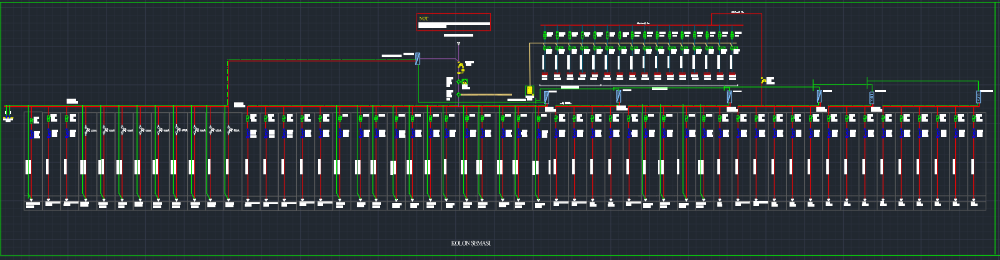
Elektrik proje onayı, teknik danışmanlık, resmi süreç takibi, uygunluk değerlendirmeleri ve mühendislik kontrol hizmetleri ile projelerinizin mevzuata tam uyumlu şekilde tamamlanmasını sağlıyoruz.
Trafo İşletme Sorumluluğu
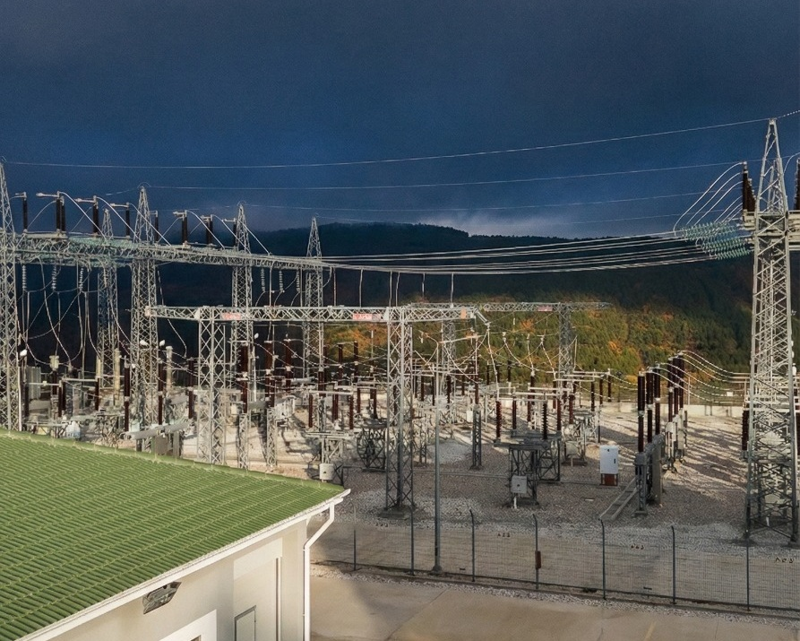
Trafo merkezlerinin mevzuata uygun şekilde işletilmesi, periyodik kontrolleri, bakım takibi, raporlama ve teknik sorumluluk hizmetlerini EMO onaylı mühendis kadromuzla yürütüyoruz. Kapsam: yıllık bakım planlaması, yasal uygunluk takibi, arıza ve bakım koordinasyonu, işletme güvenliği ve risk analizi.
Trafo Bakım ve Yüksek Gerilim Sistemleri
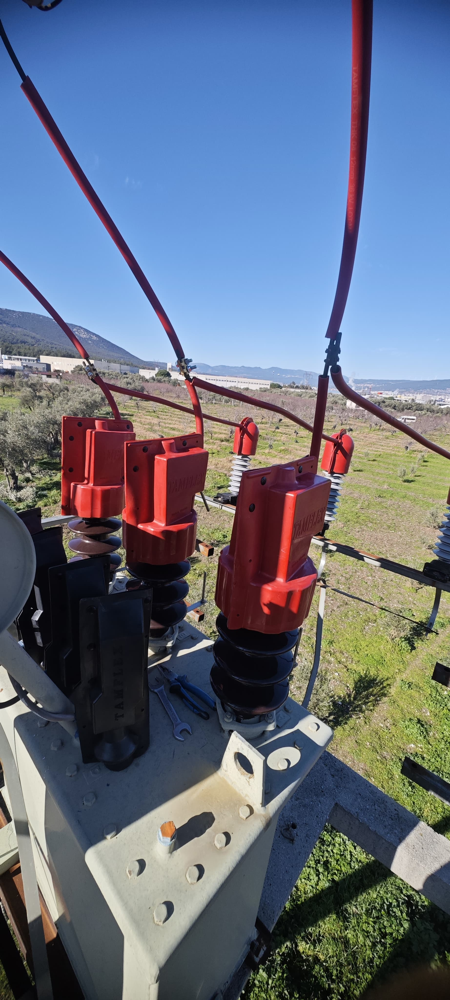
OG/YG trafo merkezlerinde periyodik bakım, izolatör ve buşing kontrolleri, yağ analizi, koruma röle testleri ve şalt sahası bakım çalışmalarını güvenlik standartlarına uygun şekilde gerçekleştiriyoruz.
Trafo ve Yüksek Gerilim Ölçüm Hizmetleri
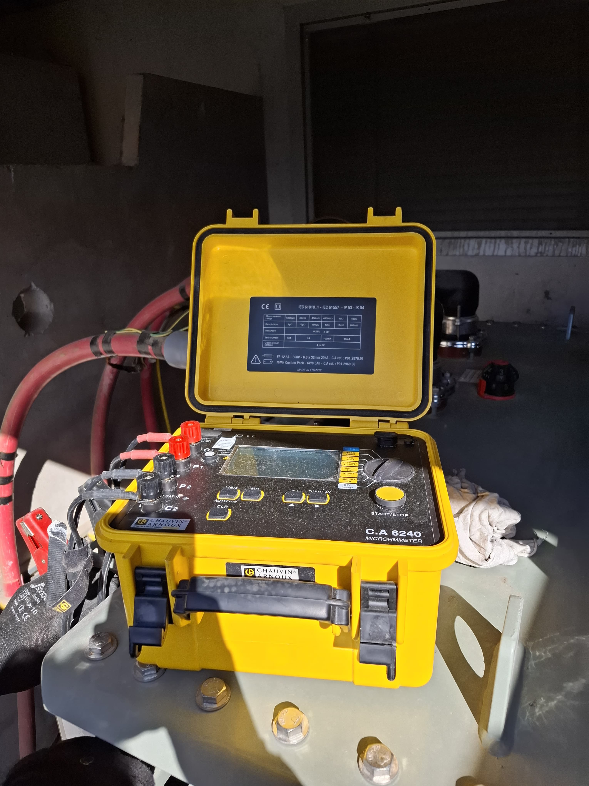
Mikro-ohmmetre, izolasyon test cihazları ve kalibre edilmiş ölçüm ekipmanları ile trafo sargı direnci, dönüştürme oranı, izolasyon direnci, kaçak akım ve topraklama ölçümlerini gerçekleştirip detaylı teknik raporlar hazırlıyoruz.
Fabrika Elektrik Usta İşleri
Üretim hatları, makineler, priz hatları, aydınlatma sistemleri, kablo tavaları, enerji dağıtım hatları, motor bağlantıları, pano bağlantıları ve saha elektrik tesisatı uygulamaları deneyimli usta kadromuzla gerçekleştirilmektedir.
Elektrik Pano Kurulumu ve Revizyonu
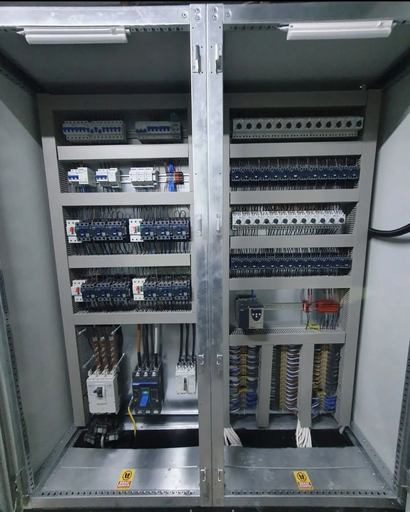
Ana dağıtım panosu, tali pano, kompanzasyon panosu, makine panosu, otomasyon panosu ve MCC pano kurulum, bakım, revizyon ve yenileme hizmetleri. Tüm panolarımız TSE ve IEC standartlarına uygun şekilde üretilir ve test edilerek teslim edilir.
Harmonik Filtreli Kompanzasyon Sistemleri

Tesisteki harmonik bozulmaların tespiti, enerji kalitesine etkilerinin analizi, reaktif güç kompanzasyonu ve harmonik filtreleme çözümleri. Doğru boyutlandırılmış kompanzasyon sistemleriyle enerji maliyetleriniz düşer, reaktif cezalarından kaçınılır ve harmonik kaynaklı ekipman arızaları azalır.
Periyodik Kontrol ve Ölçüm Hizmetleri
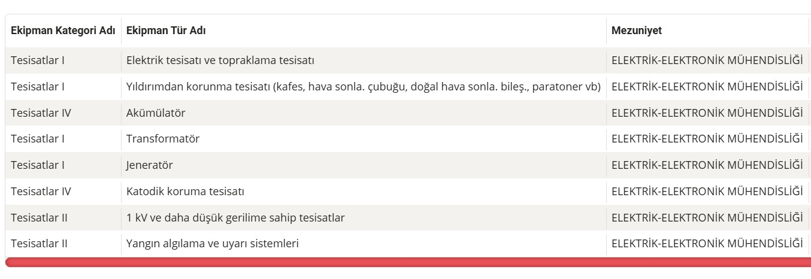
Elektrik-Elektronik Mühendisliği mezuniyeti ile yetkinlik sahibi olduğumuz periyodik kontrol alanları:
| Ekipman Kategorisi | Ekipman Türü |
|---|---|
| Tesisatlar I | Elektrik tesisatı ve topraklama tesisatı |
| Tesisatlar I | Yıldırımdan korunma tesisatı (kafes, hava sonlandırma çubuğu, doğal hava sonlandırma bileşenleri, paratoner vb.) |
| Tesisatlar I | Transformatör |
| Tesisatlar I | Jeneratör |
| Tesisatlar II | 1 kV ve daha düşük gerilime sahip tesisatlar |
| Tesisatlar II | Yangın algılama ve uyarı sistemleri |
| Tesisatlar IV | Akümülatör |
| Tesisatlar IV | Katodik koruma tesisatı |
Yenilenebilir Enerji (GES) Uygulamaları
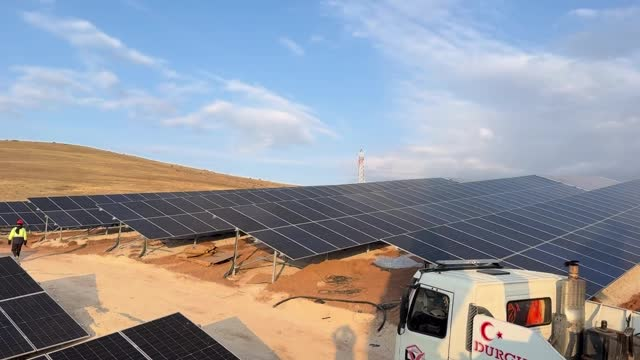
Çatı ve arazi tipi güneş enerjisi santralleri (GES) için anahtar teslim teknik hizmetler: keşif, projelendirme, pano ve inverter bağlantıları, şebeke bağlantı süreci, ölçüm ve devreye alma, ayrıca bakım ve performans takibi.
Elektrik Eğitim Setleri ve Teknik Danışmanlık
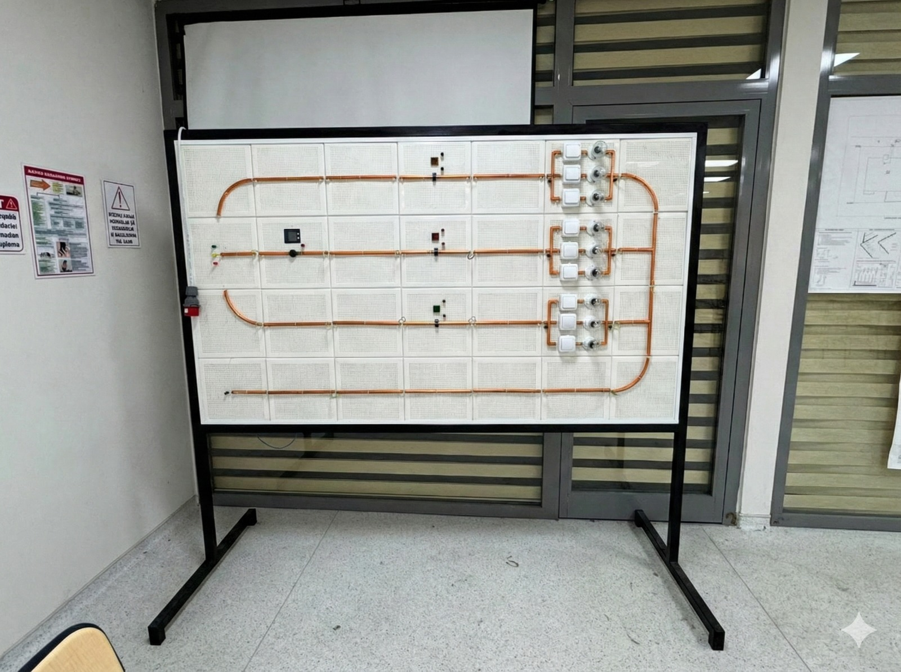
Endüstri ve eğitim kurumları için özelleştirilmiş elektrik eğitim panoları, saha uygulama setleri ve teknik danışmanlık hizmetleri sunuyoruz.
Topraklama ve Yıldırımdan Korunma Sistemleri
Topraklama tesisatı kurulumu, ölçümü, raporlanması, paratoner sistemleri, eş potansiyel bara uygulamaları ve yıldırımdan korunma çözümleriyle personel ve ekipman güvenliğini sağlıyoruz.
Tesis Kurulumu, Revizyonu ve Arıza Giderme
Yeni tesis elektrik altyapı kurulumu, mevcut tesis revizyonları, kapasite artırımı, kablo değişimi, pano düzenleme, arıza tespiti ve 7/24 hızlı müdahale hizmetleri.
Enerji Kalitesi Ölçümleri ve Raporlama
Gerilim düşümü, dengesiz yük, harmonik, reaktif güç, kompanzasyon performansı, güç faktörü ve enerji tüketim analizleriyle detaylı teknik raporlama.
Elektrik Malzeme Temini
Projeye uygun kablo, sigorta, şalter, kontaktör, röle, pano ekipmanları, kablo kanalı, tava sistemleri, aydınlatma armatürleri, topraklama malzemeleri ve ölçüm ekipmanlarının temini.
Proje İhtiyaçlarına Göre Tedarik Ettiğimiz Başlıca Markalar
Şalt & Kontrol: Schneider Electric · Siemens · ABB · Legrand · Eaton · Hager · Phoenix Contact · WAGO · Weidmüller
Anahtar & Priz: Mutlusan · Viko · Makel · Günsan
Kablo: Prysmian · Hes Kablo · Öznur Kablo · Nexans
Aydınlatma: Philips · Osram · Pelsan · ACK
Kablo Taşıma Sistemleri: EAE
Malzeme seçimini uygunluk, güvenilirlik, servis sürekliliği ve proje bütçesine göre yapıyoruz; talep halinde muadil markalarla alternatif teklif sunulur.
Başlıca Uygulama Alanları
- Fabrika elektrik tesisatı kurulumu
- Makine enerji besleme hatları
- Kablo tava ve kanal sistemleri
- Pano montajı ve pano revizyonu
- Kompanzasyon sistemleri
- Aydınlatma tesisatı
- Priz ve kuvvet tesisatı
- Motor, sürücü ve otomasyon bağlantıları
- Topraklama ve paratoner sistemleri
- Arıza tespiti ve bakım çalışmaları
- Elektrik malzeme keşfi ve temini
Fabrika ve Endüstriyel Tesisler İçin Çözümler
Üretim sürekliliğini korumak, enerji kayıplarını azaltmak ve elektrik altyapısını güvenli hâle getirmek için fabrika elektrik sistemlerinde mühendislik ve saha uygulamasını birlikte sunuyoruz. Arıza kaynaklarını tespit ediyor, uygun malzemeyi seçiyor, montajı gerçekleştiriyor ve sistemi devreye alınmış ve çalışır durumda teslim ediyoruz.
Saha Uygulamalarından
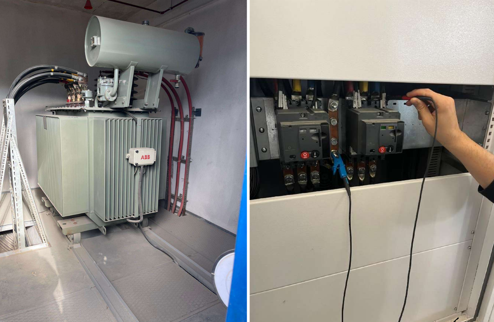
OG/AG trafo ve ana pano periyodik kontrolleri — saha ölçümleri (ABB trafo + AG kompakt şalter testi)
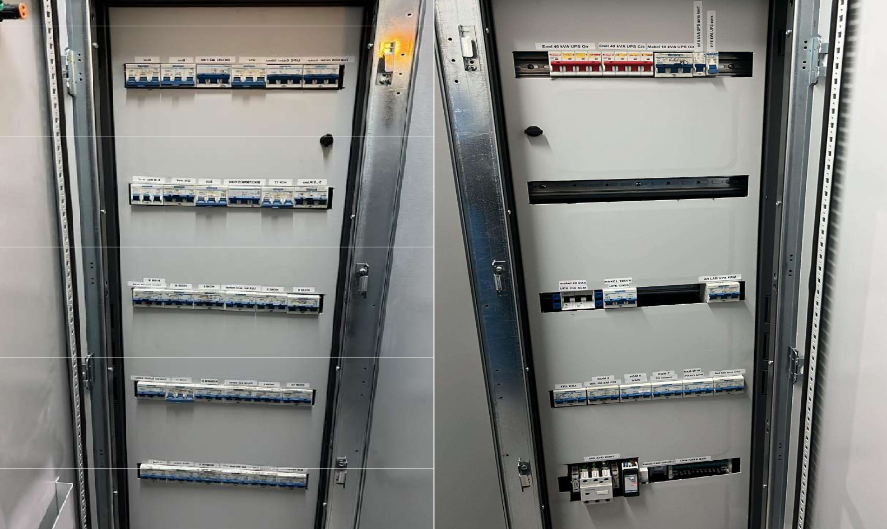
Ana dağıtım pano revizyonu — devre kesici yerleşimi, etiketleme ve UPS/jeneratör hatları
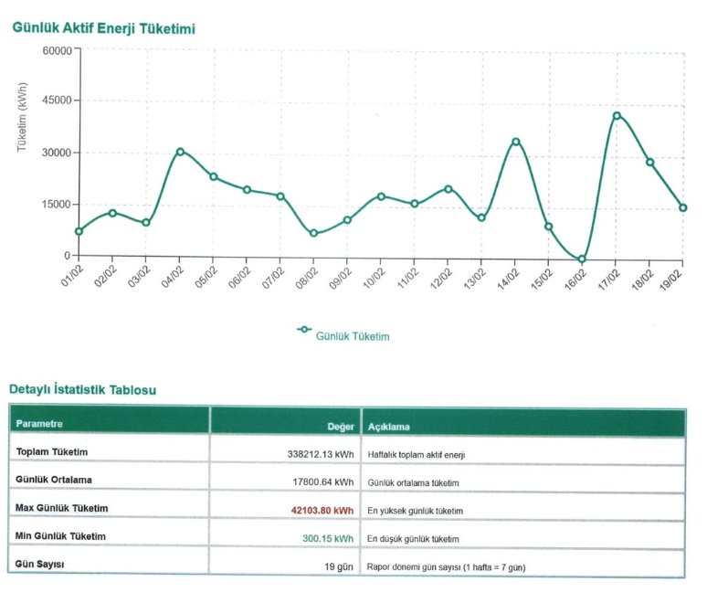
Haftalık trafo işletme raporu — günlük aktif enerji tüketim grafiği + detaylı istatistik tablosu (toplam 338.212 kWh, günlük ort. 17.800 kWh)
🔌 Elektronik & Gömülü Sistemler
Mikrodenetleyici tabanlı özel çözümlerden PCB tasarımına, IoT uygulamalarından endüstriyel veri toplama sistemlerine, otomasyon panolarından sensör ve ölçüm sistemleri entegrasyonuna kadar geniş kapsamlı elektronik mühendisliği çözümleri sunuyoruz.
Endüstriyel tesisler, makineler, üretim hatları, enerji sistemleri, tarım uygulamaları, izleme sistemleri ve özel cihaz geliştirme projeleri için ihtiyaca özel elektronik donanım, gömülü yazılım ve otomasyon çözümleri geliştiriyoruz.
Projelerde yalnızca kart tasarımı veya yazılım geliştirme değil; ihtiyaç analizi, sistem mimarisi, malzeme seçimi, prototip üretimi, test, devreye alma ve teknik destek süreçlerini de bütüncül şekilde ele alıyoruz.
Gömülü Yazılım Geliştirme
Mikrodenetleyici, sensör, haberleşme modülü, röle çıkışı, motor sürücü, ekran ve veri kayıt birimleriyle çalışan sistemler için gömülü yazılım geliştirme hizmetleri sunuyoruz.
- Mikrodenetleyici yazılımı geliştirme
- Sensör okuma ve sinyal işleme algoritmaları
- Dijital giriş/çıkış kontrolü
- Röle, kontaktör, motor ve sürücü kontrol yazılımları
- Zamanlayıcı, kesme ve haberleşme tabanlı yazılım yapıları
- LCD, OLED, HMI ve ekran arayüzleri
- Veri kayıt ve alarm sistemleri
- Cihaz çalışma senaryolarının yazılıma aktarılması
- Prototip yazılım geliştirme ve test süreçleri
- Mevcut elektronik sistemlerde yazılım revizyonu
Mikrodenetleyici Tabanlı Sistemler
STM, PIC, Arduino, ESP32, Raspberry Pi Pico ve benzeri mikrodenetleyici platformlarıyla ihtiyaca özel kontrol ve izleme sistemleri geliştiriyoruz.
- Makine kontrol uygulamaları
- Otomatik açma-kapama sistemleri
- Sıcaklık, nem, basınç, seviye ve akış kontrolü
- Enerji izleme sistemleri
- Röle kontrollü otomasyon devreleri
- Motor kontrol sistemleri
- Pompa, fan, kompresör ve vana kontrol uygulamaları
- Zaman kontrollü çalışma sistemleri
- Kablosuz veri aktarım sistemleri
- Uzaktan izleme ve kontrol çözümleri
Özel Elektronik Kart & PCB Tasarımı
Standart ürünlerin yeterli olmadığı uygulamalarda, projeye özel elektronik kart tasarımı yapıyoruz. PCB tasarım sürecinde sistemin çalışma koşulları, besleme gerilimi, giriş/çıkış sayısı, haberleşme ihtiyaçları, koruma devreleri ve montaj alanı dikkate alınır.
- Şematik devre tasarımı
- PCB yerleşim ve hat çizimi
- Tek katman, çift katman ve çok katmanlı kart tasarımı
- Güç devreleri, sensör kartları, röle çıkış kartları
- Haberleşme kartları ve mikrodenetleyici kontrol kartları
- Endüstriyel giriş/çıkış kartları
- Prototip üretim dosyaları (Gerber, BOM) ve dokümantasyon
- Kart test ve revizyon süreçleri
Endüstriyel Otomasyon Sistemleri
Fabrika, üretim hattı, makine, proses ve tesis altyapılarında; verimliliği artırmak, insan hatasını azaltmak, enerji kullanımını optimize etmek ve sistemleri daha izlenebilir hale getirmek için endüstriyel otomasyon çözümleri sunuyoruz.
İhtiyaca göre Siemens, Schneider Electric, ABB, Delta, Omron, Mitsubishi, Phoenix Contact ve benzeri endüstriyel otomasyon markalarıyla çözüm geliştirerek sistemlerin güvenilir, sürdürülebilir ve sahaya uygun şekilde çalışmasını sağlıyoruz.
PLC Yazılım Geliştirme (Siemens, Schneider vb.)
Endüstriyel otomasyon sistemlerinin kontrol merkezi olan PLC sistemleri için projeye özel yazılım geliştirme hizmeti sunuyoruz.
- Siemens, Schneider, ABB, Delta, Omron, Mitsubishi PLC uygulamaları
- Makine çalışma senaryolarının PLC'ye aktarılması
- Dijital ve analog giriş/çıkış yapılandırmaları
- Sensör, switch, encoder ve saha ekipmanı entegrasyonu
- Röle, kontaktör, valf, motor ve sürücü kontrolü
- Alarm, hata ve emniyet senaryoları
- Otomatik / manuel çalışma modları
- Reçete, sayaç, zamanlayıcı ve proses kontrol algoritmaları
- PLC program revizyonu ve optimizasyonu
- Mevcut PLC sistemlerinde arıza tespiti
SCADA Sistemi Kurulumu ve İzleme
SCADA sistemleri sayesinde üretim tesisleri, makineler, enerji sistemleri ve prosesler merkezi bir ekrandan izlenebilir, kontrol edilebilir ve raporlanabilir hâle gelir. Aşağıdaki referans ekranlar, gerçek projelerden alınmıştır ve sektör/proses özelinde yeteneklerimizi örneklendirir.
Hamur Hazırlama Prosesi — Akış ve Kontrol Ekranı
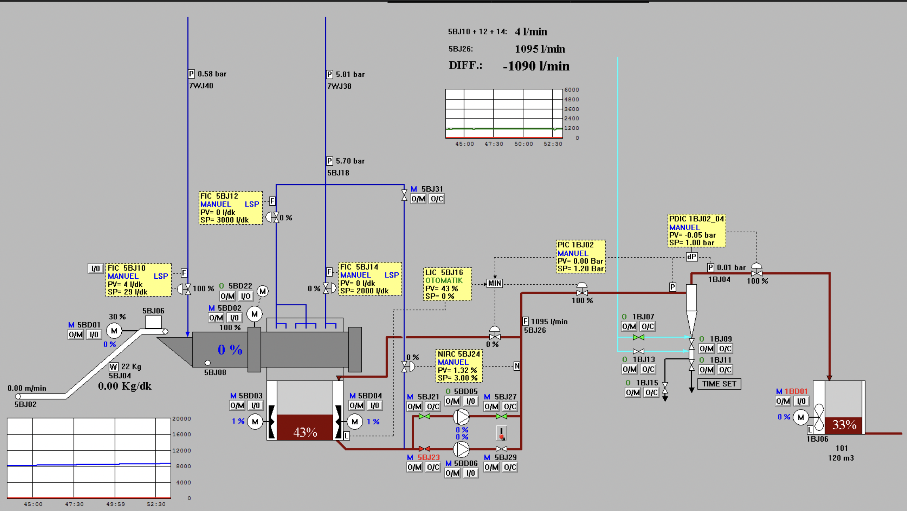
Yaş Kısım ve Vakum Sistemi — Üretim Hattı İzleme
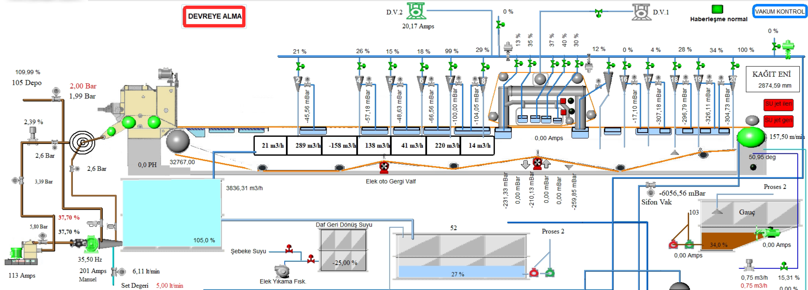
Vakum Sistemi — Ekipman Detay ve Parametre Ekranı
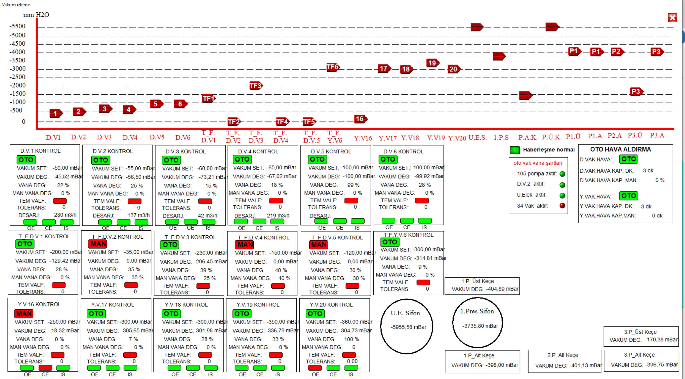
Buhar Sistemi — Kazan, Hat Basıncı ve Vana Kontrol Ekranı
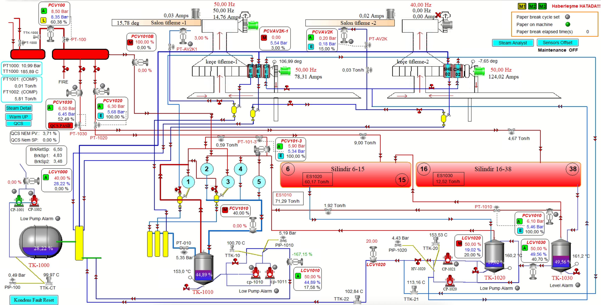
Multi-Drive Motor Tahrik Sistemi — Senkronize Hat İzleme
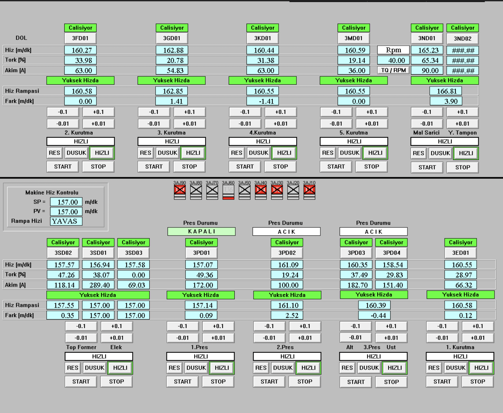
Trend İzleme — Geçmiş Veri ve Performans Analizi
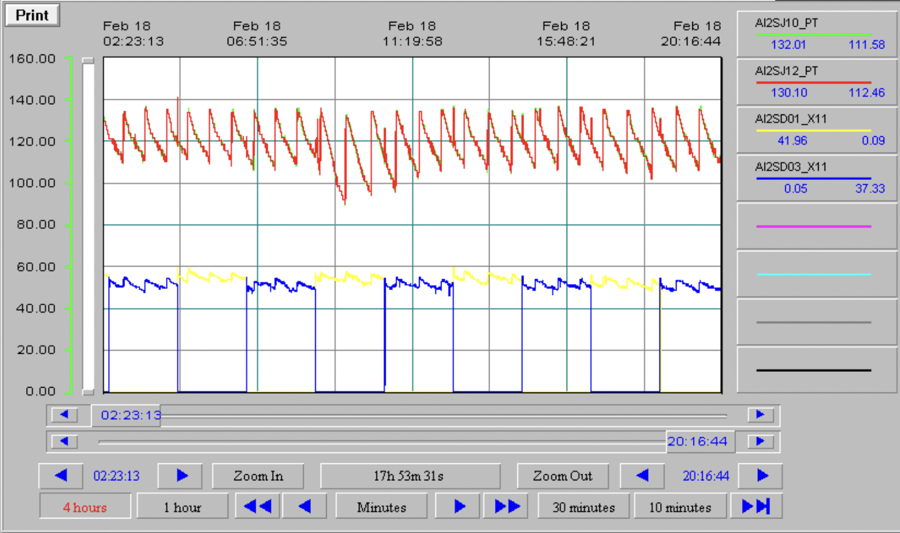
Arıtma ve Proses Otomasyonu
Biyolojik ve kimyasal arıtma tesisleri; dozajlama, karıştırma, havalandırma ve atık su yönetimi süreçleri için özel otomasyon çözümleri geliştiriyoruz.
Biyolojik Arıtma Tesisi — Proses Akış Ekranı
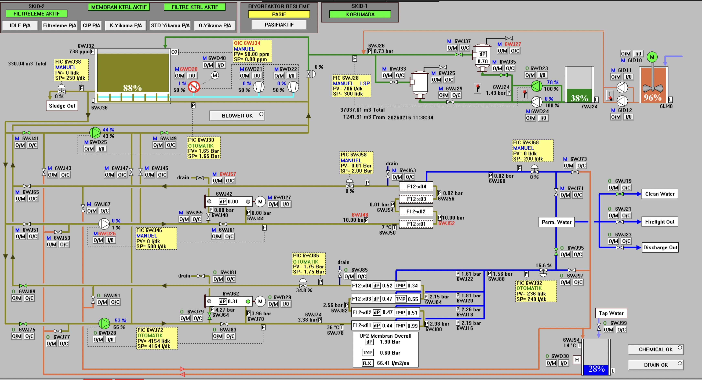
Biyolojik Arıtma — Ekipman Popup Detayı
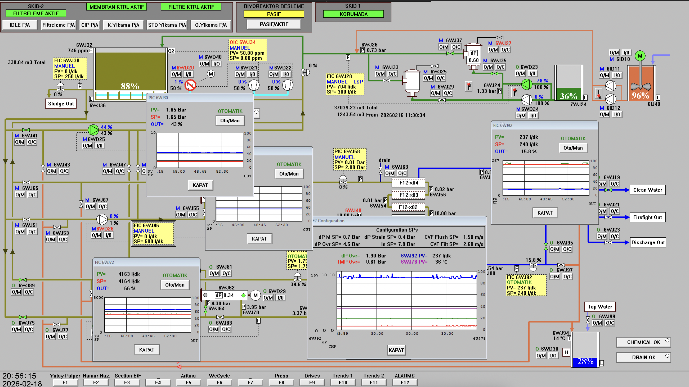
Kimyasal Arıtma Prosesi — Dozajlama ve İzleme
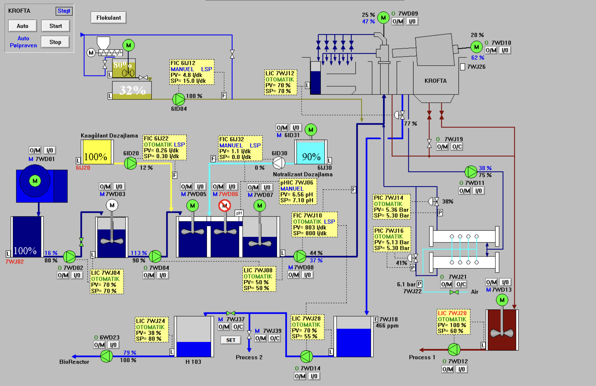
Endüstriyel Elektronik Çözümler
Fabrika, üretim tesisi, makine ve saha uygulamalarında kullanılmak üzere endüstriyel elektronik çözümler geliştiriyoruz.
- Makine elektronik kontrol sistemleri
- Endüstriyel sensör bağlantıları
- Röle ve kontaktör kontrol devreleri
- Motor sürücü kontrol sistemleri
- Alarm ve uyarı sistemleri
- Sıcaklık, basınç, seviye ve akış izleme sistemleri
- Üretim hattı veri izleme çözümleri
- Elektronik kart arıza tespiti
- Kart onarım ve revizyon desteği
- Eski sistemlerin modern elektronik altyapıya dönüştürülmesi
Veri Toplama ve İzleme Sistemleri
Saha cihazlarından, sensörlerden, enerji analizörlerinden, makinelerden ve proses ekipmanlarından alınan verilerin toplanması, kaydedilmesi, analiz edilmesi ve raporlanması için veri toplama sistemleri geliştiriyoruz.
- Sıcaklık, nem, basınç, seviye ve akış verileri
- Enerji tüketimi kayıtları
- Makine çalışma süreleri ve üretim adet takibi
- Alarm ve hata kayıtları
- Uzaktan izleme ekranları
- Günlük, haftalık ve aylık raporlar
- Bakım ve arıza süreç takibi
IoT — Nesnelerin İnterneti Uygulamaları
İnternet bağlantılı cihazlar, sensörler ve kontrol sistemleriyle uzaktan izleme ve yönetim çözümleri geliştiriyoruz.
- Kablosuz sensör sistemleri
- GSM, Wi-Fi, Ethernet ve LoRa tabanlı haberleşme
- Bulut tabanlı veri takibi
- Mobil uygulama / web panel üzerinden izleme
- Alarm ve bildirim sistemleri
- Uzaktan cihaz açma-kapama
- Akıllı tarım uygulamaları
- Akıllı bina ve tesis izleme sistemleri
- Enerji tüketim takibi
- Makine durum izleme sistemleri
Sensör ve Ölçüm Sistemleri Entegrasyonu
Endüstriyel ve özel uygulamalarda kullanılan sensörlerin elektronik sistemlere, otomasyon altyapılarına veya veri toplama sistemlerine entegrasyonunu sağlıyoruz.
Entegre edilebilen sensörler: Sıcaklık, nem, basınç, seviye, akış, mesafe, akım/gerilim, enerji analizörleri, loadcell ağırlık ölçüm, encoder, yaklaşım sensörleri, manyetik sensörler, gaz ve hava kalitesi, ışık ve ortam sensörleri.
Haberleşme ve Entegrasyon Çözümleri
Kablolu: RS485 · Modbus RTU · Modbus TCP · CAN Bus · UART · I²C · SPI · Ethernet
Kablosuz: Wi-Fi · Bluetooth · LoRa · GSM / GPRS / LTE
Protokol: MQTT · HTTP / REST API entegrasyonları
Prototip Geliştirme ve Ürünleştirme
Fikir aşamasındaki elektronik projelerin prototipe dönüştürülmesi ve saha koşullarına uygun hale getirilmesi için destek sağlıyoruz: ihtiyaç analizi → sistem mimarisi → devre tasarımı → gömülü yazılım → PCB → malzeme seçimi → prototip → test → kutu ve montaj → saha denemeleri → revizyon ve ürünleştirme.
Başlıca Uygulama Alanları
- Fabrika otomasyon sistemleri
- Makine kontrol sistemleri
- Üretim hattı izleme sistemleri
- Enerji izleme cihazları
- Akıllı tarım sistemleri
- Akıllı bina uygulamaları
- Sensör tabanlı ölçüm sistemleri
- IoT tabanlı uzaktan izleme sistemleri
- Endüstriyel veri toplama sistemleri
- Pompa ve motor kontrol sistemleri
- Alarm ve uyarı sistemleri
- Özel elektronik cihaz geliştirme
- PCB tasarımı ve prototip üretimi
- Eski sistemlerin elektronik modernizasyonu
⚙️ Mekanik Sistemler
Endüstriyel tesisler, fabrikalar, üretim hatları, makine parkurları ve proses alanları için kapsamlı mekanik mühendislik, imalat, montaj, revizyon, periyodik kontrol ve modernizasyon hizmetleri sunuyoruz.
Endüstriyel makine tasarımından üretim hattı kurulumuna, konveyör sistemlerinden hidrolik ve pnömatik çözümlere, pompa, fan ve motor sistemlerinden çelik konstrüksiyon uygulamalarına, mekanik SMM hizmetlerinden ekipman periyodik kontrollerine kadar işletmelerin mekanik altyapı ihtiyaçlarına yönelik uçtan uca çözümler geliştiriyoruz.
Projelerde yalnızca mekanik imalat veya montaj değil; ihtiyaç analizi, saha keşfi, mekanik projelendirme, teknik çizim, malzeme seçimi, imalat planlama, montaj, periyodik kontrol, uygunluk değerlendirmesi, test, devreye alma ve raporlama süreçlerini de bütüncül şekilde ele alıyoruz.
Amacımız: üretim süreçlerini daha verimli, güvenli, mevzuata uygun, sürdürülebilir ve işletme ihtiyaçlarına uygun hale getirmek.
Mekanik SMM — Serbest Müşavir Mühendislik Hizmetleri
Mekanik tesisat, makine, ekipman, üretim hattı ve endüstriyel sistemlerin projelendirme, kontrol, uygunluk değerlendirme ve teknik danışmanlık süreçlerinde Mekanik SMM hizmetleri sunuyoruz.
- Mekanik proje hazırlama ve kontrol hizmetleri
- Mekanik tesisat proje danışmanlığı
- Teknik uygunluk değerlendirmeleri
- Endüstriyel tesislerde mekanik sistem incelemeleri
- Makine ve ekipman yerleşim değerlendirmeleri
- Mevcut mekanik altyapının analiz edilmesi
- Kapasite artırımı ve revizyon süreçlerinde mühendislik desteği
- Mekanik tesisat, makine ve ekipman teknik raporlaması
- Resmi kurum, OSB, belediye ve ilgili süreçlerde teknik destek
- İşletme güvenliği ve bakım kolaylığı açısından teknik değerlendirme
- Uygulama öncesi keşif, metraj ve malzeme listesi hazırlama
Mekanik Periyodik Kontrol ve Uygunluk Raporlama
İşletmelerde kullanılan mekanik ekipmanların güvenli, verimli ve düzenli çalışması için periyodik kontrol ve uygunluk değerlendirme hizmetleri sunuyoruz.
- Makine ve ekipman genel durum kontrolleri
- Mekanik tesisat uygunluk kontrolleri
- Pompa, fan ve motor sistemleri kontrolleri
- Hidrolik sistem kontrolleri
- Pnömatik sistem kontrolleri
- Kompresör ve basınçlı hava hatları kontrolleri
- Konveyör sistemleri kontrolleri
- Redüktör, kaplin, rulman, kayış-kasnak ve zincir sistemleri kontrolleri
- Çelik konstrüksiyon, platform, korkuluk ve taşıyıcı sistem kontrolleri
- Titreşim, ses, kaçak, gevşeme ve aşınma kontrolleri
- Yağlama, hizalama ve balans durum değerlendirmeleri
- Koruyucu muhafaza ve mekanik güvenlik ekipmanı kontrolleri
- Bakım ihtiyaçlarının belirlenmesi
- Uygunsuzlukların tespiti ve iyileştirme önerileri
- Teknik rapor ve kontrol formu hazırlanması
Kaldırma ve İletme Ekipmanları Periyodik Kontrolleri
Endüstriyel tesislerde kullanılan kaldırma ve iletme ekipmanlarının güvenli çalışması için periyodik kontrol ve raporlama hizmetleri sağlanır.
Kontrol kapsamına giren ekipmanlar: vinç sistemleri, monoray vinçler, portal vinçler, caraskal sistemleri, forklift ve istif makineleri, transpaletler, platformlar, yük asansörleri, kaldırma aparatları, sapan-kanca-zincir ve bağlantı elemanları, konveyör ve taşıma sistemleri.
Kontrollerde mekanik bağlantılar, taşıyıcı sistemler, fren ve emniyet sistemleri, aşınma durumları, deformasyonlar ve kullanım güvenliği incelenir; uygunsuzluklar ve öneriler teknik raporla işletmeye sunulur.
Basınçlı Kap ve Tesisat Kontrolleri
Basınç altında çalışan ekipmanlar için kontrol ve raporlama hizmetleri sunulur.
- Kompresör hava tankları
- Basınçlı hava tesisatları
- Hidrofor tankları
- Genleşme tankları
- Kazan ve sıcak su sistemleri
- Buhar hatları
- Basınçlı proses ekipmanları
- Emniyet ventilleri ve manometreler
- Pompa ve bağlantı tesisatları
Kontrollerde ekipmanın fiziki durumu, bağlantı noktaları, kaçak riski, basınç emniyet elemanları, korozyon ve çalışma güvenliği değerlendirilir.
Havalandırma ve Mekanik Tesisat Kontrolleri
- Havalandırma kanalları kontrolleri
- Fan ve aspiratör sistemleri kontrolleri
- Filtre ve menfez kontrolleri
- Toz, duman ve egzoz tahliye sistemleri
- HVAC sistemleri genel kontrolleri
- Pompa ve sirkülasyon sistemleri
- Borulama ve bağlantı noktaları
- Titreşim ve ses kontrolleri
- Debi ve performans değerlendirmeleri
- Bakım ihtiyacı ve iyileştirme önerileri
Endüstriyel Makine Tasarımı ve İmalatı
Fabrika ve üretim tesislerinde ihtiyaç duyulan özel amaçlı makineler, yardımcı ekipmanlar ve proses destek sistemleri için endüstriyel makine tasarımı ve imalatı hizmetleri sunuyoruz. Tasarım sürecinde üretim ihtiyacı, kapasite hedefi, çalışma ortamı, kullanılacak malzeme, operatör güvenliği, bakım kolaylığı ve otomasyon gereksinimleri birlikte değerlendirilir.
- Özel amaçlı makine tasarımı
- Üretim destek ekipmanları tasarımı
- Proses yardımcı makineleri
- Taşıma, aktarma ve yönlendirme sistemleri
- Kesme, delme, presleme, karıştırma ve dozajlama ekipmanları
- Makine gövdesi ve şase tasarımı
- Rulman, mil, kaplin, redüktör ve aktarım elemanları seçimi
- Motor, pompa, fan ve tahrik sistemi uyumluluğu
- Operatör güvenliği ve ergonomi değerlendirmesi
- Teknik çizim ve imalat dokümantasyonu
- Prototip üretim ve saha testleri
- Seri üretime uygun tasarım iyileştirmeleri
Mekanik Sistem Kurulumu ve Revizyonu
Mevcut tesislerdeki mekanik sistemlerin kurulumu, yenilenmesi, kapasite artırımı ve arıza kaynaklı revizyon çalışmaları profesyonel şekilde gerçekleştirilir.
- Yeni mekanik sistem kurulumu
- Mevcut sistemlerin sökülmesi ve yeniden montajı
- Üretim alanı yerleşim değişiklikleri
- Makine ve ekipman konumlandırma
- Şase, platform ve taşıyıcı sistem uygulamaları
- Mekanik bağlantı ve ankraj çalışmaları
- Mil, rulman, kayış, kasnak, zincir ve dişli sistemlerinin revizyonu
- Redüktör, kaplin ve aktarma organları kontrolleri
- Titreşim, balans ve hizalama problemlerinin giderilmesi
- Koruyucu muhafaza ve güvenlik kapakları montajı
- Devreye alma öncesi mekanik kontroller
Üretim Hatları Kurulumu ve Optimizasyonu
Üretim hatlarının doğru planlanması, ürün akışının hızlanması, iş gücü verimliliğinin artması ve darboğazların azaltılması için üretim hattı kurulum ve optimizasyon hizmetleri sunuyoruz.
- Üretim hattı yerleşim planlaması
- Makine ve ekipman dizilimi
- Ürün akış yönü analizi
- Hat kapasitesi değerlendirmesi
- İş istasyonu planlaması
- Konveyör ve transfer sistemlerinin entegrasyonu
- Mekanik bağlantı ve montaj işleri
- Hat üzerindeki ekipmanların hizalanması
- Operatör erişimi ve bakım alanlarının planlanması
- Üretim darboğazlarının tespiti
- Verimlilik artırıcı mekanik iyileştirmeler
- Hat genişletme ve kapasite artırımı çalışmaları
Konveyör Sistemleri Tasarım ve Kurulumu
Üretim tesislerinde ürün, hammadde, yarı mamul veya ambalajlı ürünlerin taşınması için ihtiyaca özel konveyör sistemleri tasarlıyor ve kuruyoruz.
- Bantlı konveyör sistemleri
- Rulolu konveyör sistemleri
- Zincirli konveyör sistemleri
- Modüler bant konveyörler
- Eğimli ve düz taşıma hatları
- Ürün yönlendirme ve transfer sistemleri
- Ayırma, birleştirme ve aktarma istasyonları
- Konveyör şase ve gövde imalatı
- Motor, redüktör ve tambur seçimi
- Bant, rulman, yataklama ve taşıyıcı eleman seçimi
- Sensör ve otomasyon entegrasyonuna uygun tasarım
Hidrolik ve Pnömatik Sistem Çözümleri
Endüstriyel makinelerde ve proses ekipmanlarında kullanılan hidrolik ve pnömatik sistemler için kurulum, revizyon, bakım ve iyileştirme çözümleri sunuyoruz.
Hidrolik Sistemler
- Hidrolik güç üniteleri
- Hidrolik silindir uygulamaları
- Valf blokları ve yön kontrol sistemleri
- Basınç kontrol sistemleri
- Hidrolik hortum ve bağlantı ekipmanları
- Hidrolik kaçak tespiti
- Yağ, filtre ve sistem kontrolleri
- Hidrolik pres, lift ve kaldırma sistemleri
- Hidrolik sistem revizyonu
Pnömatik Sistemler
- Pnömatik silindir uygulamaları
- Solenoid valf ve valf adası çözümleri
- Hava hazırlama grupları
- Regülatör, filtre ve yağlayıcı sistemleri
- Pnömatik hortum ve bağlantı elemanları
- Vakum sistemleri
- Pnömatik tutucu ve aktüatör uygulamaları
- Basınçlı hava hatları
- Pnömatik sistem arıza tespiti ve revizyonu
Pompa, Fan ve Motor Sistemleri
Endüstriyel tesislerde kullanılan pompa, fan ve motor sistemlerinin seçimi, kurulumu, mekanik bağlantısı, hizalaması, revizyonu ve performans iyileştirmesi için çözümler sunuyoruz.
- Pompa sistemi kurulumu
- Sirkülasyon, transfer, dozaj ve basınçlandırma pompa sistemleri
- Fan ve havalandırma sistemleri
- Motor, redüktör ve kaplin bağlantıları
- Pompa-motor kaplin hizalama çalışmaları
- Şase ve kaide imalatı
- Titreşim ve balans problemlerinin değerlendirilmesi
- Rulman, salmastra ve mekanik conta kontrolleri
- Kayış-kasnak ve zincir aktarma sistemleri
- Enerji verimliliğine yönelik mekanik iyileştirmeler
Çelik Konstrüksiyon ve Mekanik Montaj
Endüstriyel tesislerde ihtiyaç duyulan taşıyıcı yapılar, platformlar, makine şaseleri, ekipman taşıyıcıları ve mekanik montaj elemanları için çelik konstrüksiyon çözümleri sunuyoruz.
- Makine şasesi imalatı
- Platform ve yürüyüş yolu imalatı
- Merdiven, korkuluk ve servis platformları
- Ekipman taşıyıcı konstrüksiyonlar
- Boru ve kablo taşıyıcı destek yapıları
- Tank, silo ve proses ekipmanı destekleri
- Konveyör taşıyıcı konstrüksiyonları
- Kaynaklı imalat çalışmaları
- Cıvatalı bağlantı sistemleri
- Ankraj ve sabitleme uygulamaları
- Boya, kaplama ve yüzey koruma işlemleri
Makine Modernizasyonu (Retrofit)
Eskiyen, verimsiz çalışan veya yedek parça sorunu yaşanan makinelerin daha verimli, güvenli ve güncel teknolojiye uygun hale getirilmesi için makine modernizasyonu hizmetleri sunuyoruz.
- Mevcut makinenin mekanik durum analizi
- Yıpranmış parçaların tespiti
- Mekanik aktarma sistemlerinin yenilenmesi
- Mil, rulman, kayış, kasnak, zincir ve dişli değişimleri
- Şase ve gövde güçlendirme çalışmaları
- Koruyucu muhafaza ve güvenlik ekipmanı eklenmesi
- Hidrolik ve pnömatik sistem revizyonu
- Motor, redüktör ve tahrik sistemlerinin yenilenmesi
- Otomasyon sistemlerine uygun mekanik düzenlemeler
- Kapasite ve verimlilik artırıcı iyileştirmeler
- Test, devreye alma ve performans kontrolleri
Mekanik Bakım ve Arıza Giderme
- Mekanik arıza tespiti
- Rulman, mil, kaplin ve redüktör kontrolleri
- Kayış, kasnak, zincir ve dişli sistemleri bakımı
- Titreşim ve ses kaynaklı arıza analizi
- Pompa, fan ve motor mekanik kontrolleri
- Hidrolik ve pnömatik kaçak kontrolleri
- Mekanik bağlantı ve gevşeme kontrolleri
- Koruyucu muhafaza kontrolleri
- Planlı bakım çalışmaları
- Acil mekanik müdahale
- Revizyon sonrası test ve devreye alma
Kullanılan Malzeme ve Ekipman Grupları
Motor ve redüktör sistemleri · Rulman ve yataklama elemanları · Mil, kaplin ve aktarma elemanları · Kayış, kasnak, zincir ve dişli sistemleri · Hidrolik silindir, hortum, valf ve güç üniteleri · Pnömatik silindir, valf, şartlandırıcı ve bağlantı elemanları · Konveyör bantları, rulolar ve tamburlar · Çelik profiller, sac malzemeler ve bağlantı elemanları · Paslanmaz çelik ekipmanlar · Motor kaideleri ve makine şaseleri · Koruyucu muhafaza ve güvenlik ekipmanları · Borulama, flanş ve mekanik bağlantı parçaları.
Başlıca Uygulama Alanları
- Fabrika mekanik sistemleri
- Üretim hattı kurulumu
- Makine tasarımı ve imalatı
- Özel amaçlı makine geliştirme
- Konveyör ve taşıma sistemleri
- Paketleme ve aktarma sistemleri
- Pompa ve fan sistemleri
- Hidrolik pres ve kaldırma sistemleri
- Pnömatik hareket sistemleri
- Çelik konstrüksiyon ve platform imalatı
- Makine revizyon ve retrofit uygulamaları
- Mekanik bakım ve arıza giderme
- Kapasite artırımı ve hat optimizasyonu
- Endüstriyel tesis modernizasyonu
🛒 Malzeme & Ekipman Tedarik Rehberi
Satınalma, proje ve teklif hazırlık birimleri için kategori bazlı ürün & marka haritası.
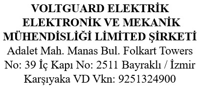
⚡ 1) Elektrik Malzemeleri
AG & OG şalt cihazları, kablolar, pano ekipmanları, aydınlatma, topraklama, kompanzasyon ve enerji kalitesi bileşenlerinde Avrupa ve yerli kaliteli markalar ile çalışıyoruz.
| Ürün Grubu | Tercih Ettiğimiz Markalar |
|---|---|
| Enerji Kabloları (NYY, NYAF, N2XH, H07RN-F, YVV, XLPE OG) | Prysmian · Nexans · Hes Kablo · Öznur Kablo · Erse · 2M Kablo · Ünal Kablo · Taykablo · LAPP ÖLFLEX |
| Haberleşme / Data Kabloları (PROFIBUS, PROFINET, CAT6, instrument) | Belden · LAPP · Nexans · Siemens · Helukabel |
| Otomatik Sigorta (MCB) | Schneider Electric · ABB · Siemens · Hager · Eaton · Legrand · Federal · Entes |
| Termik Manyetik Şalter (TMŞ / MCCB) | Schneider Compact NSX · ABB Tmax · Siemens 3VA · Eaton NZM · LS Metasol · Federal |
| Açık Tip Şalter (ACB) | Schneider Masterpact · ABB Emax 2 · Siemens 3WA / 3WL · Terasaki |
| Kontaktör | Schneider TeSys · ABB AF · Siemens Sirius 3RT · LS · Mitsubishi · Entes |
| Termik / Motor Koruma Rölesi (MPCB) | Schneider GV2/GV3 · ABB MS · Siemens 3RV · Eaton PKZ |
| Kaçak Akım Rölesi (RCD / RCCB) | Schneider · ABB · Siemens · Hager · Doepke |
| Parafudr (SPD) — Aşırı Gerilim Koruma | DEHN · Phoenix Contact · OBO Bettermann · Weidmüller · ABB |
| Yardımcı Röleler (kumanda, zaman, faz) | Finder · Omron · Schneider Zelio · Siemens · Relpol · Entes · Tense |
| Ray Klemensler & Jumper | Phoenix Contact · WAGO · Weidmüller · ABB Entrelec · Klemsan |
| Buton, Sinyal Lambası, Seçici Anahtar | Schneider Harmony · Siemens Sirius ACT · EMAS · Mete Enerji · IDEC |
| Pano Gövdesi / Kabin | Rittal · Schneider Spacial · Eldon · ABB Gemini · Çetinkaya · İpaş |
| Kablo Kanalı & Tavası | EAE · Öznur · Eraş · Feyzer · OBO · Atiker |
| Busbar / Busway Sistemleri | EAE · Schneider Canalis · Siemens · LS Cable |
| Kompanzasyon (Rölesi, Kondansatör, Reaktör) | Entes · KLEMSAN · Frako · Lifasa · Janitza · Schneider VarPlus |
| Harmonik Filtre & Aktif Filtre | ABB (PQF) · Schneider AccuSine · Comsys · Janitza · Entes |
| Enerji Analizörü & Multimetre | Janitza · Entes · Schneider PowerLogic · Siemens Sentron · Lovato · Circutor |
| Akım Trafosu (CT) & Gerilim Trafosu | ABB · Schneider · Entes · Klemsan · Meba |
| Güç Trafosu (Yağlı / Kuru Tip) | Astor · BEST · Metar · Emek Trafo · Siemens · ABB · Schneider Minera |
| OG Hücre / OG Kesici | Schneider SM6 / RM6 · ABB UniSec · Siemens NXPLUS C · Ulusoy Elektrik · Elektromed |
| Aydınlatma Armatürleri (LED) | Philips · Osram / Ledvance · Pelsan · ACK · Horoz · Lamp83 · Nova Luce |
| Endüstriyel / Acil Aydınlatma | Philips GentleSpace · Pelsan · Versalite · Cata |
| Priz & Anahtar (Yapısal) | Legrand · Viko · Makel · Günsan · Schneider Asfora · Niko |
| Endüstriyel Priz / CEE | Mete Enerji · Scame · Legrand · Bals |
| Topraklama Malzemeleri (bakır çubuk, bara, pense) | Mutlusan · Polat Elektrik · nVent ERICO · DEHN · Furse |
| Paratoner & Yıldırımdan Korunma | DEHN · nVent ERICO · France Paratonnerres · OBO Bettermann · Mutlusan |
| UPS / Kesintisiz Güç | Schneider APC · Eaton · Socomec · Delta · Vertiv · Tescom · Inform |
| Jeneratör | Aksa · Teksan · Emsa · Gücbir · Caterpillar · FG Wilson · Cummins |
| GES / Solar Malzemeleri (panel, invertör, yapı) | Longi · JA Solar · Jinko · Canadian Solar · Huawei · SMA · Fronius · Sungrow · K2 Systems |
| Elektrik Ölçüm Cihazları (multimetre, pens, izolasyon) | Fluke · Hioki · Chauvin Arnoux · Megger · Kyoritsu · UNI-T |
| Termal Kamera & Enerji Kalite Analiz | Fluke · Flir · Testo · Hioki · Dranetz · PQ-Box (A-Eberle) |
🤖 2) Elektronik & Otomasyon Bileşenleri
PLC/HMI/SCADA altyapısı, sürücüler, servo sistemler, sensörler, endüstriyel haberleşme ve enerji izleme tarafında sahada kanıtlanmış, uzun ömürlü otomasyon markaları ile çalışıyoruz.
| Ürün Grubu | Tercih Ettiğimiz Markalar |
|---|---|
| PLC (Programlanabilir Mantık Kontrolör) | Siemens S7-1200 / S7-1500 / LOGO! · Schneider M221 / M241 / M340 / M580 · ABB AC500 · Omron CJ2 / NX · Mitsubishi FX / Q / iQ-R · Delta DVP / AS · Beckhoff CX · B&R · LS XGB |
| HMI Operatör Panel | Siemens Comfort / Basic KTP · Schneider Magelis · Weintek · Pro-face · Delta DOP · Beijer · Omron NS / NA |
| SCADA Yazılımı | Siemens WinCC · Wonderware / AVEVA · Ignition · Schneider Citect · GE iFIX · Indusoft / AVEVA Edge |
| AC Motor Sürücü (VFD / Invertör) | ABB ACS380 / ACS580 / ACS880 · Siemens Sinamics G120 / V20 · Schneider Altivar ATV12/320/630/930 · Delta MS300 / C2000 · Danfoss VLT / FC · Yaskawa GA500 · Vacon · Hitachi |
| Servo Sürücü & Motor | Siemens Sinamics S210 / V90 · Schneider Lexium · Yaskawa Sigma · Mitsubishi MR-J4/J5 · Panasonic MINAS · Delta ASDA · Omron G5 / 1S |
| Step Motor Sürücü | Leadshine · Oriental Motor · Panasonic · Delta · Autonics |
| Enkoder (artımsal & mutlak) | Heidenhain · Baumer · SICK · Kübler · Autonics · Omron · Leuze · Pepperl+Fuchs |
| Endüktif / Kapasitif Yaklaşım Sensör | IFM · Balluff · Pepperl+Fuchs · SICK · Omron · Autonics · Turck · Contrinex |
| Fotosel / Optik Sensör | SICK · Keyence · Omron · Banner · Leuze · Autonics |
| Ultrasonik / Lazer Mesafe Sensör | SICK · Keyence · Pepperl+Fuchs · IFM · Banner · Baumer |
| Basınç Transmitteri / Switch | Wika · Endress+Hauser · Siemens Sitrans · Danfoss · IFM · Keller · Krohne · BD Sensors |
| Sıcaklık Transmitteri / PT100 / Termokupl | Endress+Hauser · Wika · Siemens · ABB · PR Electronics · Phoenix Contact |
| Seviye Sensörü (radar, ultrasonik, kapasitif) | Endress+Hauser · Vega · SICK · Siemens · Krohne · Emerson Rosemount · IFM |
| Debi / Akış Ölçer | Krohne · Endress+Hauser · SICK · Yokogawa · Siemens Sitrans · Emerson Micro Motion |
| Akıllı Kontrol Vanası / Aktüatör | Belimo · Samson · Rotork · AUMA · Emerson Fisher · Siemens |
| Sinyal Çevirici / Bariyer / İzolatör | Phoenix Contact MINI · Weidmüller · Pepperl+Fuchs · Dataforth · PR Electronics · Knick |
| Güç Kaynağı (DIN ray, 24 VDC) | Phoenix Contact Quint / Trio · Siemens Sitop · Mean Well · Weidmüller · Omron S8VK · Rhino / Puls |
| Emniyet Rölesi / PLC / Işık Perdesi | Pilz · SICK · Siemens Sirius Safety · Schneider Preventa · ABB Jokab · Banner · Keyence · Omron STI |
| Endüstriyel Haberleşme Switch / Router | Hirschmann (Belden) · Moxa · Siemens Scalance · Phoenix Contact · Westermo · Advantech |
| Endüstriyel PC / Panel PC (IPC) | Siemens Simatic IPC · Beckhoff · B&R · Advantech · Kontron · Pro-face |
| IO-Link Master / Akıllı I/O | Balluff · IFM · SICK · Murrelektronik · Turck · Pepperl+Fuchs |
| Protokol Dönüştürücü / Gateway | HMS Anybus · Moxa · Siemens · Schneider · Red Lion · Phoenix Contact · ProSoft |
| IoT / Edge / Veri Kaydedici | Teltonika · Advantech · Moxa · Siemens MindSphere / Industrial Edge · Raspberry Pi CM (özel çözüm) · ESP32 tabanlı kartlar |
| Enerji Analizörü & Güç Kalite İzleme | Janitza UMG · Entes EPM · Schneider PM8000 · Siemens Sentron PAC · Lovato DMG · Circutor |
| Frekans / PID / Proses Kontrolörü | Omron E5 · Autonics TK · Delta DTB · Schneider Zelio · Siemens Sipart · Yokogawa UT |
| Mikrodenetleyici / Gömülü Platform (AR-GE) | STM32 (STMicro) · Microchip PIC / AVR · Espressif ESP32 / ESP32-S3 · Nordic nRF · Raspberry Pi Pico · NXP iMX |
| Pasif / Aktif Elektronik Bileşen (AR-GE & PCB) | TI · Analog Devices · Infineon · ST · ON Semi · Vishay · Murata · TDK · Würth · Epcos |
⚙️ 3) Mekanik Ekipman Grupları
Tahrik grubu, aktarma elemanları, hidrolik/pnömatik, pompa/fan, vana, konveyör ve çelik konstrüksiyon tarafında endüstri standardı markalarla tedarik sağlıyoruz.
| Ürün Grubu | Tercih Ettiğimiz Markalar |
|---|---|
| AC Elektrik Motoru (IE2 / IE3 / IE4) | Siemens · ABB · WEG · Gamak · Volt · Elektrim · Nord · Bauknecht |
| ATEX / Ex-Proof Motor | ABB Ex · Siemens Simotics XP · WEG W22X · Nord · Gamak |
| Redüktör & Motoredüktör | SEW-Eurodrive · Nord · Bonfiglioli · Rossi · Flender (Siemens) · Lenze · Yılmaz Redüktör · Pmp Redüktör |
| Rulman & Yataklama | SKF · FAG / INA (Schaeffler) · NSK · NTN · Timken · Koyo · NKE |
| Kaplin (elastik, dişli, magnetik) | KTR Rotex · Flender N-Eupex · Voith · Chr. Mayr · Ruland · R+W |
| Kayış & Kasnak (V, düz, triger) | Optibelt · Gates · Continental ContiTech · Dunlop · Mitsuboshi |
| Zincir & Dişli Sistemleri | Renold · Iwis · Tsubaki · KÖBO · Rexnord |
| Lineer Hareket (ray, bilyalı mil, LM) | Bosch Rexroth · Hiwin · THK · NSK · Ewellix (SKF) · PMI |
| Hidrolik Komponentler (pompa, valf, silindir, HPU) | Bosch Rexroth · Parker · Eaton (Vickers) · Atos · Hydac · Danfoss · Yuken · Kawasaki |
| Pnömatik Komponentler | Festo · SMC · Camozzi · Parker · Norgren · Metal Work · Mindman · Airtac |
| Kompresör & Basınçlı Hava | Atlas Copco · Ingersoll Rand · Kaeser · Gardner Denver · ELGi · Dalgakıran · Boge |
| Hava Kurutucu / Filtre | Atlas Copco · Kaeser · Parker · Mikropor · Dalgakıran |
| Santrifüj Pompa (su, proses) | Grundfos · KSB · Wilo · Sulzer · Ebara · Xylem (Flygt, Lowara) · İmpo · Sumak · Vansan |
| Dozaj & Dalgıç Pompa | Grundfos · ProMinent · Seepex · Verderflex · Iwaki · Alldos |
| Fan & Blower (aksiyal, radyal) | ebm-papst · Ziehl-Abegg · Systemair · Elektror · Nicotra · Soler & Palau · Aironn |
| Endüstriyel Vana (kelebek, küresel, kontrol) | Emerson Fisher · KSB · Bray · Samson · KITZ · ARI-Armaturen · Vexve · Vanaş |
| Vana Aktüatörü | Rotork · AUMA · Belimo · Bernard Controls · Limitorque · ProMation |
| Konveyör Bandı & Modüler Bant | Habasit · Forbo Siegling · Intralox · Ammeraal Beltech · Rulmeca · ContiTech |
| Konveyör Rulo / Tambur | Rulmeca · Interroll · Van der Graaf · Precismeca |
| Salmastra / Keçe / Sızdırmazlık | Trelleborg · Freudenberg (Simrit) · Parker · SKF · Chesterton · John Crane |
| Kablo Rakoru & Sızdırmazlık Elemanı | PFLITSCH · LAPP Skintop · Hummel · Jacob · OBO · Roxtec |
| Çelik / Yapı Malzemesi (profil, sac, boru) | Erdemir · Çolakoğlu · Borusan · Tosyalı · MMK · Habaş · İçdaş |
| Paslanmaz Çelik (304/316 L) | Outokumpu · Aperam · Posco · Acerinox · Kovinex |
| Bağlantı Elemanları (cıvata, somun, pul) | Norm Civata · Berdan Civata · Kale Civata · Bossard · Würth · Böllhoff |
| Çelik Halat · Sapan · Kaldırma Ekipmanı | Gunnebo · Crosby · Pewag · Kito · Demag · Yale |
| Vinç & Kaldırma Sistemleri | Demag · Konecranes · Kito · Stahl CraneSystems · ABUS · GH Cranes |
| Yağlar & Yağlama Sistemleri | Shell · Mobil · Castrol · Total · SKF LubriLean · Lincoln (SKF) · Klüber |
| Endüstriyel Boya & Yüzey Koruma | Jotun · Hempel · Marshall · Akzo Nobel · Polisan · Betek Endüstri |
| İzolasyon / Yalıtım Malzemesi | Rockwool · Armacell · Izocam · Isover · Kingspan |
| Filtrasyon / Arıtma Ekipmanları | Pentair · Pall · Donaldson · Parker Domnick Hunter · Eaton Filtration · Mann+Hummel |
📋 Satınalma & Teklif Sürecinde VoltGuard Yaklaşımı
Neler Sunuyoruz?
- Projeye özel malzeme listesi (BoM): tasarım ve keşife göre kalem kalem malzeme listesi çıkarılır.
- Karşılaştırmalı teklif (A / B / C markaları): en az iki muadil markayla teknik ve ticari karşılaştırma.
- Teknik dokümantasyon: ürün katalogları, datasheet, sertifika, uygunluk beyanı (CE, TSE, IEC), garanti belgeleri.
- Teslim organizasyonu: fabrika tesliminden saha tesliminde ayrıştırmalı nakliyeye kadar lojistik yönetimi.
- Kurulum & devreye alma: yalnızca malzeme değil; talep halinde montaj, bağlantı ve commissioning hizmeti.
- Stok & yedek parça planı: kritik ekipman için önerilen minimum stok listesi ve yedek parça tavsiyesi.
Not: Yukarıdaki marka listeleri örnek niteliğindedir; VoltGuard bayilik veya münhasır distribütörlük iddiasında bulunmaz. Projenizin teknik gereksinimleri doğrultusunda en uygun markayı birlikte belirliyor, en uygun koşullarla tedarik ediyoruz.
Teklif Talebi İçin: Malzeme listesi, teknik şartname veya proje dosyanızı paylaşın; karşılaştırmalı teklif, teknik öneri ve teslim sürelerini net şekilde sunalım. 📞 +90 545 434 67 35 · ✉ info@voltguard.com.tr
🏆 Sertifikalar ve Akademik Belgeler
VoltGuard kurucusu Emrullah Günay'a ait akademik başarı, proje ve eğitim belgeleri
🎓 Onur Belgesi — Ege Üniversitesi Mühendislik Fakültesi
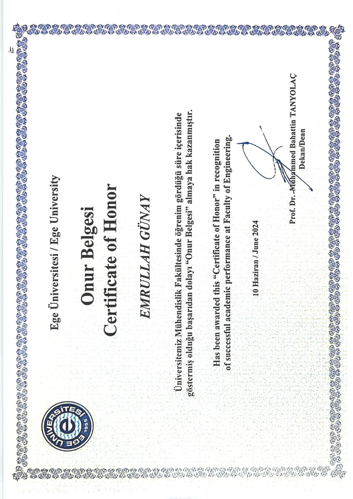
Mühendislik Fakültesi'nde öğrenimi süresince gösterdiği başarıdan dolayı "Onur Belgesi" almaya hak kazanmıştır.
10 Haziran 2024 · Prof. Dr. Muhammed Bahattin Tanyolaç — Dekan
⚡ Endüstriyel Tesisler Semineri — Katılım ve Başarı Sertifikası
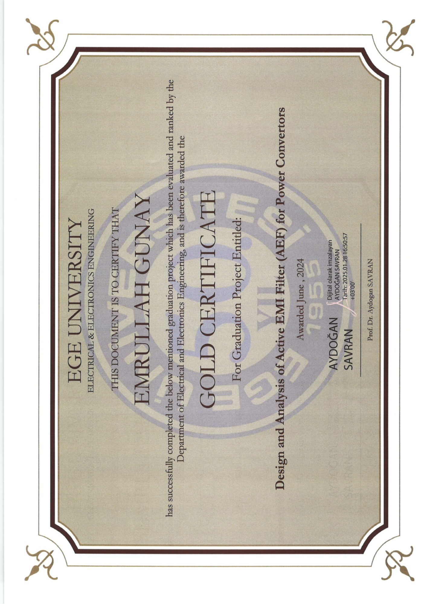
Ege Üniversitesi Elektrik-Elektronik Mühendisliği Bölümü tarafından düzenlenen "Endüstriyel Tesisler" konulu seminere katılarak yapılan sınavdan başarılı olmuş ve sertifika almaya hak kazanmıştır.
04.07.2024 · Sertifika No: 2024-B-HA-KB-18 · Prof. Dr. Aydoğan Savran — Bölüm Başkanı
🛡 Savunma Sanayii Akademi — Kariyer ve Yetkinlik Buluşmaları-2
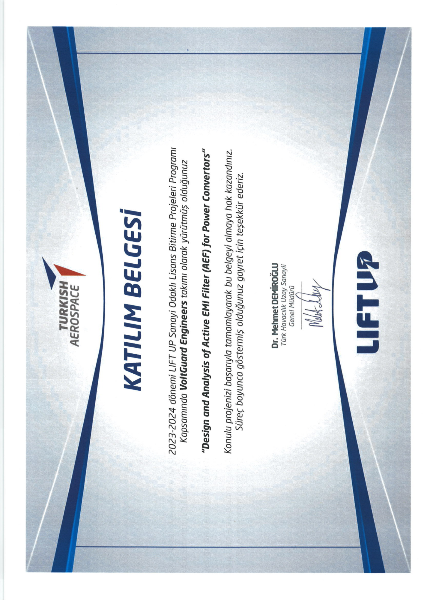
T.C. Cumhurbaşkanlığı Savunma Sanayii Başkanlığı tarafından Milli Yetkinlik Hamlesi kapsamında gerçekleştirilen "Kariyer ve Yetkinlik Buluşmaları"na katılım için verilmiştir.
Tanzim Tarihi: 09.05.2025 · Savunma Sanayii Akademi
🥇 Gold Certificate — Bitirme Projesi (Ege University)
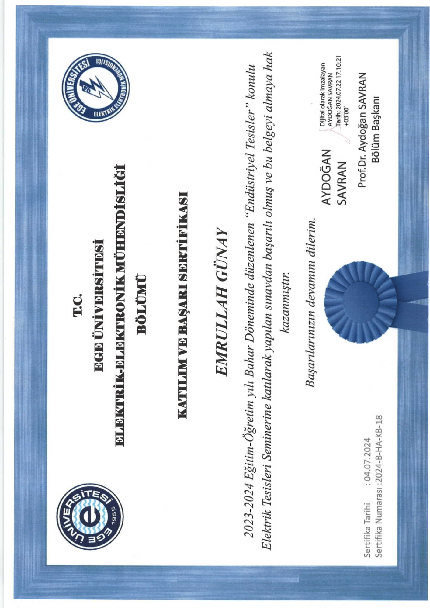
Ege Üniversitesi Elektrik-Elektronik Mühendisliği Bölümü tarafından, "Design and Analysis of Active EMI Filter (AEF) for Power Convertors" başlıklı bitirme projesi değerlendirilerek Gold Certificate ile ödüllendirilmiştir.
June 2024 · Prof. Dr. Aydoğan Savran
🚀 TUSAŞ LIFT UP — Sanayi Odaklı Lisans Bitirme Projeleri
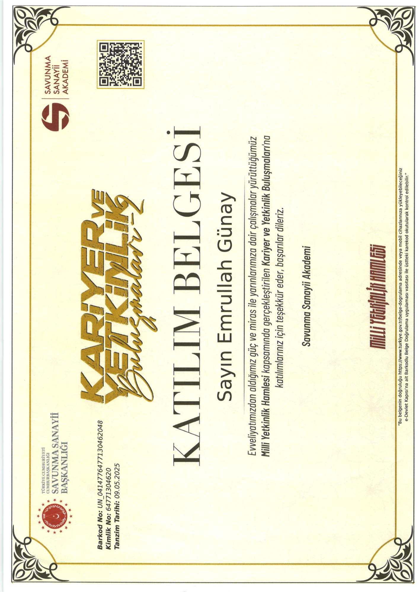
2023-2024 dönemi Turkish Aerospace (TUSAŞ) LIFT UP Sanayi Odaklı Lisans Bitirme Projeleri Programı kapsamında VoltGuard Engineers takımı ile yürütülen "Design and Analysis of Active EMI Filter (AEF) for Power Convertors" projesinin başarıyla tamamlanmasından dolayı verilmiştir.
Dr. Mehmet Demiroğlu — Türk Havacılık Uzay Sanayii Genel Müdürü
ℹ Not: VoltGuard'ın SMM belgesi, vergi levhası ve diğer resmi kurumsal belgeleri talep üzerine kurumsal iletişim kanalları aracılığıyla paylaşılmaktadır.
Kurumsal Hizmet ve
Mühendislik Yetkinlik Raporu
Disiplinler arası entegre mühendislik çözümleri
1. Kurumsal Tanıtım
Firmamız; elektrik mühendisliği, endüstriyel otomasyon, gömülü sistemler, yazılım geliştirme, mekanik tasarım ve güç elektroniği alanlarında faaliyet gösteren, disiplinler arası entegre mühendislik çözümleri sunan bir teknoloji firmasıdır. Farklı mühendislik disiplinlerini tek çatı altında birleştirerek, karmaşık teknik ihtiyaçlara bütüncül ve sürdürülebilir çözümler üretmekteyiz.
Teknik uzmanlığımızı saha deneyimiyle birleştirerek; endüstriyel tesislerden enerji altyapılarına, özel makine üretiminden IoT tabanlı sistemlere kadar geniş bir yelpazede hizmet sunmaktayız. Her projede yalnızca teknik gereksinimleri değil; operasyonel verimlilik, enerji tasarrufu, maliyet optimizasyonu ve uzun vadeli işletme güvenliğini de önceliklendirmekteyiz.
Uçtan uca mühendislik yaklaşımımız:
- Analiz ve fizibilite çalışmaları
- Sistem mimarisi oluşturma
- Tasarım ve projelendirme
- Yazılım geliştirme
- Donanım tasarımı ve üretim
- Saha uygulama ve montaj
- Devreye alma ve performans doğrulama
- Teknik destek, bakım ve iyileştirme
Bu yaklaşım sayesinde projelerde tasarım–uygulama uyumsuzluklarını minimize ederek zaman ve maliyet avantajı sağlamakta; sistemlerin ilk kurulumdan itibaren yüksek verimlilikle çalışmasını güvence altına almaktayız.
Temel hedefimiz; güvenli, sürdürülebilir, enerji verimli ve mevzuata tam uyumlu sistemler geliştirerek müşterilerimize uzun vadeli teknik ve ekonomik katma değer sağlamaktır.
2. Endüstriyel Otomasyon ve PLC Çözümleri
2.1 PLC Yazılım Geliştirme
Desteklenen platformlar: Siemens (S7-1200 / S7-1500 / S7-300), Allen Bradley, Schneider, Mitsubishi, Delta ve diğer PLC platformları.
- Sıfırdan PLC programlama
- Mevcut yazılım revizyonu ve optimizasyonu
- Proses kontrol yazılımları
- Makine otomasyon yazılımları
- PID kontrol uygulamaları
- Endüstriyel haberleşme entegrasyonları (Modbus, Profinet, Profibus, Ethernet/IP)
2.2 HMI ve SCADA Sistemleri
- Operatör panel tasarımı
- SCADA yazılım geliştirme
- Alarm ve raporlama sistemleri
- Uzaktan izleme ve kontrol çözümleri
- Veri toplama ve arşivleme sistemleri
- Merkezi kontrol ve izleme altyapıları
2.3 Endüstriyel Entegrasyon
- PLC – VFD entegrasyonu
- PLC – Robot entegrasyonu
- PLC – Enerji analizörü entegrasyonu
- MES / ERP sistemleri ile veri entegrasyonu
- IoT tabanlı izleme sistemleri
2.4 Revizyon ve Modernizasyon
- Eski sistemlerin yeni PLC platformlarına migrasyonu
- Enerji verimliliği optimizasyonu
- Üretim hattı kapasite artırımı
- Arıza analiz ve performans iyileştirme
2.5 Devreye Alma ve Teknik Destek
- Saha devreye alma hizmetleri
- Online / uzaktan teknik destek
- Periyodik bakım hizmetleri
- Arıza müdahale hizmeti
- Operatör ve teknik ekip eğitimleri
3. Elektrik Mühendisliği ve SMM Hizmetleri
🏛 SMM Yetkisi: Firmamız SMM (Serbest Müşavir Mühendislik) belgesine sahip olup resmi ve yetkili elektrik mühendisliği hizmetleri sunmaktadır.
3.1 Elektrik Projelendirme
- Elektrik iç tesisat projeleri
- Kuvvetli ve zayıf akım projeleri
- OG/AG projelendirme
- Topraklama ve yıldırımdan korunma projeleri
- Kompanzasyon projeleri
- Aydınlatma projeleri
- Keşif, metraj ve teknik şartname hazırlama
- Resmi kurum onay süreçleri ve takip
3.2 Periyodik Kontrol Hizmetleri
- Elektrik iç tesisat periyodik kontrolleri
- Topraklama ölçümü ve raporlaması
- Paratoner ölçümü
- Termal kamera ile pano kontrolü
- Harmonik ölçüm ve analiz
- İzolasyon ve kaçak akım testleri
- Mevzuata uygun teknik raporlama
3.3 Trafo İşletme Sorumluluğu (OG Tesisleri)
- Trafo işletme sorumluluğu hizmeti
- OG hücre kontrol ve bakım planlaması
- Koruma rölesi testleri
- Kesici ve ayırıcı kontrolleri
- İşletme defteri takibi
- Dağıtım şirketi koordinasyonu
3.4 Enerji Nakil Hattı ve Şalt Sistemleri
- Yer altı enerji hattı çekimi
- OG/AG kablo serimi ve sonlandırma
- OG kablo başlığı uygulamaları
- VCS (Vakumlu Kesici Sistemleri)
- OG hücre montajı
- RMU sistemleri
- Bara sistemleri uygulamaları
- Şalt sahası ekipman montajı
3.5 Endüstriyel Elektrik Taahhüt İşleri
- Anahtar teslim elektrik projeleri
- Fabrika enerji altyapı kurulumu
- Üretim makineleri enerji besleme sistemleri
- Kompanzasyon sistemi kurulumu
- Jeneratör ve UPS entegrasyonu
- Enerji analizör sistem kurulumu
- Saha kablolama ve test işlemleri
4. Gömülü Sistemler ve Mikrodenetleyici Çözümleri
4.1 Mikrodenetleyici Yazılım Geliştirme
Desteklenen platformlar: STM32 · PIC · AVR · ESP32 / ESP8266 · ARM Cortex-M sistemler.
- Bare-metal yazılım geliştirme
- RTOS tabanlı sistemler
- Donanım sürücü geliştirme
- Bootloader tasarımı
- OTA firmware güncelleme
- Güç ve performans optimizasyonu
4.2 IoT ve Endüstriyel Cihaz Yazılımı
- IoT cihaz yazılımı
- MQTT, HTTP, TCP/IP uygulamaları
- Wi-Fi, Bluetooth, LoRa, GSM entegrasyonu
- Sensör veri toplama sistemleri
- Bulut entegrasyonu (AWS, Azure vb.)
- Uzaktan izleme ve kontrol çözümleri
4.3 PCB ve Donanım Tasarımı
- Özel PCB tasarımı
- Çok katmanlı kart tasarımı
- EMI/EMC uyumlu tasarım
- Prototip üretim ve test
- Donanım doğrulama
- Üretime uygunluk optimizasyonu (DFM)
Örnek Donanım / Yazılım Çalışmaları
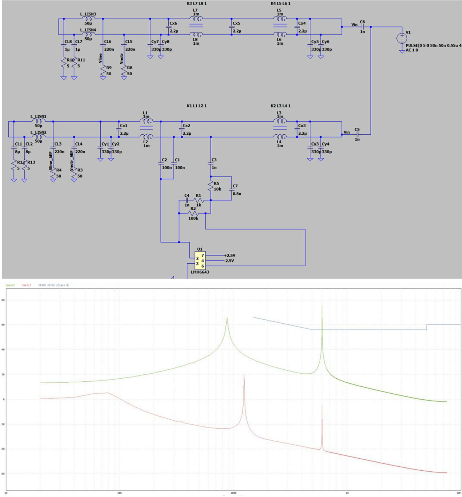
Aktif EMI Filtre projesi — STM32 tabanlı kontrol kartı şematik tasarımı (VoltGuard)
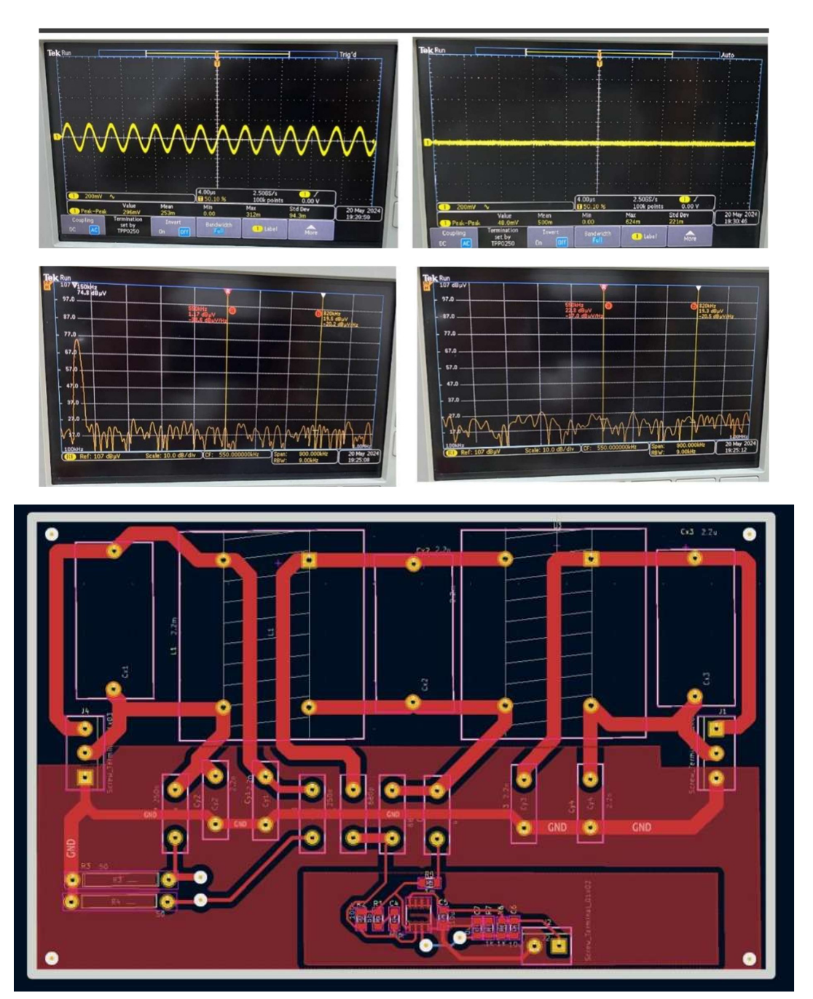
Aktif EMI Filtre prototipi — zaman/frekans domain osiloskop ölçümleri ve PCB layout
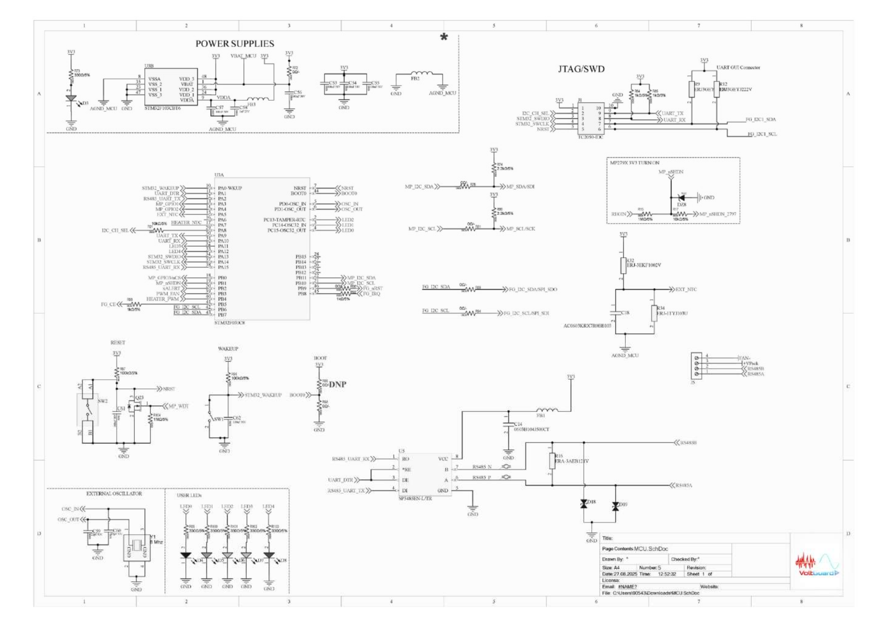
BMS (Batarya Yönetim Sistemi) analog ön kat tasarımı — LTspice şematik ve frekans tepkisi
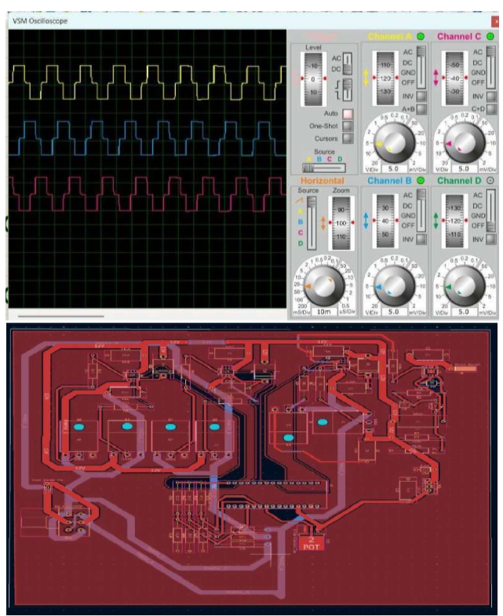
BLDC motor sürücü kartı — PWM 3 faz sinyalleri (simülasyon) ve PCB layout
5. Web Yazılım ve Dijital Çözümler
5.1 Kurumsal ve Özel Yazılım Geliştirme
- Kurumsal web siteleri
- CRM sistemleri
- ERP entegrasyonları
- Teklif ve sipariş yönetim sistemleri
- Web tabanlı otomasyon sistemleri
Geliştirdiğimiz Örnek Platformlar
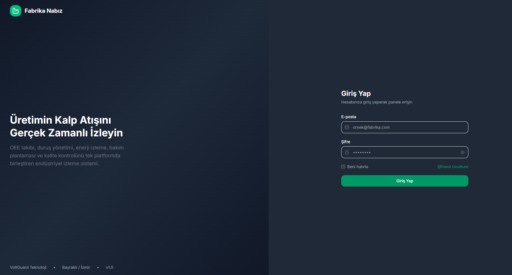
Fabrika Nabız — OEE takibi, duruş yönetimi, enerji izleme ve bakım planlamasını birleştiren endüstriyel izleme sistemi
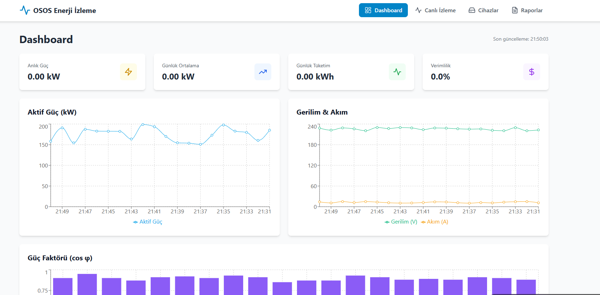
OSOS Enerji İzleme — canlı dashboard (anlık güç, gerilim/akım, güç faktörü grafikleri)
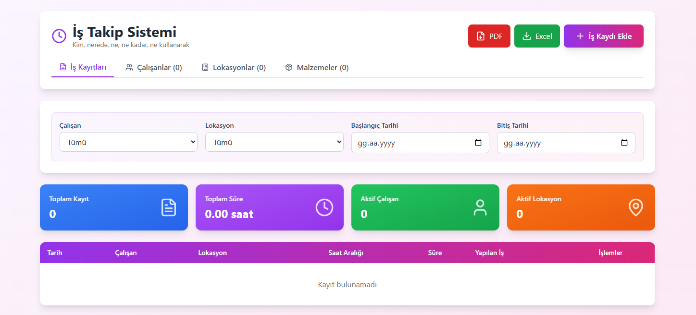
İş Takip Sistemi — çalışan, lokasyon, malzeme ve süre kayıtları; PDF/Excel raporlama
5.2 E-Ticaret ve API Çözümleri
- Özel e-ticaret altyapıları
- Ödeme sistemi entegrasyonu
- Stok ve sipariş yönetimi
- RESTful API geliştirme
- Mikroservis mimarisi
- Güvenli veri yönetimi
5.3 Kullanılan Teknolojiler
Frontend: HTML5 · CSS3 · JavaScript · React · Vue · Angular
Backend: Node.js · .NET · PHP · Python
Veritabanı: MySQL · PostgreSQL · MSSQL
Altyapı: Docker · AWS / Azure bulut sistemleri
6. Mekanik Tasarım ve Makine Mühendisliği
6.1 Mekanik Tasarım
- Özel makine tasarımı
- 3D CAD modelleme
- Teknik resim ve imalat dosyası hazırlama
- Montaj tasarımı
- Mekanizma analizi
6.2 Analiz ve Simülasyon
- Mukavemet analizi (FEA)
- Titreşim analizi
- Termal analiz
- Yük hesaplamaları
- Emniyet katsayısı değerlendirmeleri
6.3 Teknik Dokümantasyon
- Üretim teknik dosyaları
- Montaj ve bakım kılavuzları
- Parça listeleri (BOM)
- CE teknik dosya hazırlığı
7. Güç Kalitesi ve Güç Elektroniği
7.1 Güç Kalitesi Analizi
- Harmonik ölçüm ve THD analizi
- Reaktif güç analizi
- Yük dengeleme
- IEEE 519 uygunluk değerlendirmesi
7.2 Harmonik ve EMI/EMC Çözümleri
- Pasif ve aktif harmonik filtre tasarımı
- Hibrit filtre çözümleri
- EMI filtre tasarımı
- Gürültü azaltma mühendisliği
- CE ve EMC uygunluk desteği
7.3 Güç Elektroniği Tasarımı
- AC-DC / DC-DC dönüştürücüler
- İnverter sistemleri
- Soft starter uygulamaları
- VFD entegrasyonu
- IGBT / MOSFET tabanlı güç devreleri
8. Hizmet Verdiğimiz Sektörler
- Endüstriyel üretim tesisleri
- Organize sanayi bölgeleri
- Enerji üretim ve dağıtım tesisleri
- Gıda ve içecek sektörü
- Otomotiv yan sanayi
- Tekstil ve plastik sektörü
- Su ve atık su tesisleri
- Veri merkezleri
- Yenilenebilir enerji sistemleri
- Teknoloji ve savunma sanayi alt sistemleri
9. Kurumsal Katma Değerimiz
- SMM belgeli resmi mühendislik yetkinliği
- Disiplinler arası entegre mühendislik yaklaşımı
- Standartlara ve mevzuata tam uyum
- Enerji verimliliği odaklı tasarım
- Maliyet / performans dengeli çözümler
- Ölçeklenebilir ve sürdürülebilir sistem mimarisi
- Uzun vadeli teknik destek
- Anahtar teslim proje yönetimi
Sonuç
Firmamız; elektrik, otomasyon, yazılım, gömülü sistemler, mekanik tasarım ve güç elektroniği alanlarında uçtan uca mühendislik hizmetleri sunmaktadır. Analizden devreye almaya kadar tüm süreçleri kapsayan bütüncül yaklaşımımız sayesinde:
sistemler geliştirerek müşterilerimize sürdürülebilir teknik ve ekonomik değer sağlamaktayız.
Referanslarımız
VoltGuard ekibi, lisans ve profesyonel kariyeri boyunca aşağıdaki kurum ve projelerde teknik çalışmalar yürütmüştür:
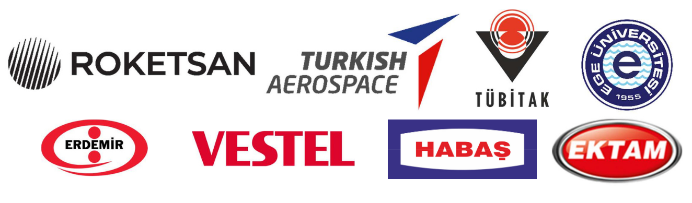
Detaylı referans dosyaları ve proje künyeleri talep üzerine kurumsal iletişim kanalları aracılığıyla paylaşılmaktadır.
🎯 Müşteri Faydaları — VoltGuard ile Çalışmanın Getirileri
Sadece “ne yapıyoruz”ı değil, size ne kazandırdığımızı da ölçülebilir şekilde ortaya koyuyoruz.
📋 Raporlama Çıktılarımız
Her periyodik kontrol, ölçüm ve devreye alma süreci sonunda müşterimize aşağıdaki çıktıları teslim ederiz:
- İzolasyon, topraklama, kacağı, sargı direnci değerleri
- Limit karşılaştırması ve trend
- Yetkili mühendis onayı
- Fotoğraf destekli bulgu listesi
- Risk seviyesi (kritik / orta / düşük)
- Saha etiketleme ve referans
- Öncelik sıralaması ile aksiyon listesi
- Malzeme önerisi ve tahmini bütçe
- Uygulama takvimi
- TSE, IEC, EMO atıfları
- İş güvenliği mevzuatı uyum notu
- İmzalı, kaşeli PDF
📌 Not: Örnek rapor şablonları (elektrik periyodik kontrol, trafo bakım, topraklama ölçümü, enerji kalitesi analizi) talep üzerine PDF olarak paylaşılır.
İletişim & Yetkili İmza
Projeleriniz, keşif talepleriniz, periyodik kontrol ve mühendislik hizmetleri için bizimle iletişime geçebilirsiniz. Tüm sözleşmeler ve teknik raporlar, aşağıda yer alan yetkili mühendis imzası ve şirket kaşesi ile onaylanır.
| Unvan | VoltGuard Elektrik Elektronik ve Mekanik Mühendisliği Limited Şirketi |
|---|---|
| Adres | Adalet Mah. Manas Bul. Folkart Towers No: 39 İç Kapı No: 2511 Bayraklı / İzmir |
| Vergi Dairesi / VKN | Karşıyaka VD · 9251324900 |
| Telefon | 0545 434 67 35 · +90 545 434 67 35 |
| E-Posta | info@voltguard.com.tr |
| Web | voltguard.com.tr |
Bu belge VoltGuard Elektrik Elektronik ve Mekanik Mühendisliği Ltd. Şti. tarafından hazırlanmıştır. Tüm hakları saklıdır © 2026.